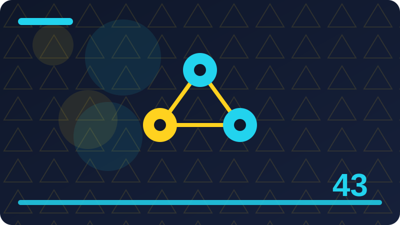

Chapter 43: Open Models and Local Models in Plain Words

Section 1: What Open Means in Plain Words
This section introduces what open means in plain words in plain words, one idea at a time. You will not be asked to trust any big claim, and you will not need any paid service or outside account. Everything here runs locally, with small toy examples, so you can test each idea yourself, change one thing, run it again, and watch what changes.
One key idea about what open means in plain words is this: open, for a model, usually means that some important parts are shared publicly, such as the weights, the code, or the description of how it was built. A beginner who understands this point will make better choices than an expert who ignores it, because most mistakes here come from rushing, not from lack of talent.
One key idea about what open means in plain words is this: open is not one single thing, because different projects share different parts, under different rules, and with different levels of completeness. That matters because it changes what you should do next, not just what you believe. When you can name the effect, you can plan around it instead of being surprised by it.
One key idea about what open means in plain words is this: the useful question is always which parts are open, under what licence, and whether you can actually use, study, and change them. If you ever feel unsure about this point, return to a concrete example rather than an abstract argument. One real, small, local example usually clears up more confusion than ten general claims.
The small program below lets you try a toy version of this idea on your own machine, using only the Python standard library and your own words. Run it, read the output, then change one list item or one value and run it again, so you can see exactly what each part contributes to the result.
Try explaining your result out loud before you call it done, even if you are alone. Say what the piece is for, who it is for, and which parts you made, which parts the tool drafted, and which parts you changed. If you stumble on any of those answers, that stumble is useful information: it shows you exactly where the work still needs your attention.
If one idea from this section sticks, let it be this: slow, honest checking beats fast, careless output every time. Speed feels impressive in the moment, but checked work is the work people trust, reuse, and remember. Build the checking habit now, while your projects are small, and it will already be strong when your projects grow. When you can read the code, see the files, and explain the output, you are in control, and that control is worth more than raw size. Open does not mean free of responsibility: you still check outputs, respect licences, and keep private data private, even when the model runs at home.
# A tiny local "model": a word counter you fully control.
def count_words(text):
return len(text.split())
print(count_words("A local model runs on your own machine."))Check: Give a small local example of what open means in plain words from your own files or ideas, and say what you would check before keeping it.
Section 2: Weights, Code and Data: Three Different Things
Many beginners meet weights, code and data: three different things through headlines, adverts, or a single impressive demo, and those sources tend to show only the best result. This section shows the ordinary middle of the work instead: the trying, the choosing, the fixing, and the checking. That middle is where skill actually grows, and it is the part you can practise today with nothing more than your own computer and your own files.
One key idea about weights, code and data: three different things is this: the weights are the learned numbers inside a model, the code is the program that runs them, and the data is the material the model learned from. If you ever feel unsure about this point, return to a concrete example rather than an abstract argument. One real, small, local example usually clears up more confusion than ten general claims.
One key idea about weights, code and data: three different things is this: a project can share its code but not its weights, or its weights but not its training data, and each combination gives you different freedoms. That matters because it changes what you should do next, not just what you believe. When you can name the effect, you can plan around it instead of being surprised by it.
One key idea about weights, code and data: three different things is this: before you call a model open, check all three parts separately, because a single open part does not make the whole project open. In practice, this is the difference between using a tool well and being used by it. The careful user notices the effect early, while the careless user only notices it after the work is already shared.
The small program below lets you try a toy version of this idea on your own machine, using only the Python standard library and your own words. Run it, read the output, then change one list item or one value and run it again, so you can see exactly what each part contributes to the result.
Another habit worth building is to keep your own notes beside the tool output. Write down what you asked for, what you got, what you kept, and what you threw away. Those four short notes turn a pile of experiments into a record you can learn from, and they protect you later when someone asks how a piece of work was made. Honest notes are a quiet kind of professionalism.
You do not need to master everything in this section today. Pick the one idea that felt most useful, try it in a tiny example of your own, and keep the rest as a map for later. Learning works best in layers: a first pass for the shape of the idea, a second pass when you actually need it, and real practice in between. Open does not mean free of responsibility: you still check outputs, respect licences, and keep private data private, even when the model runs at home.
# A tiny local classifier: rules you wrote, results you can explain.
def kind_of_text(text):
if "?" in text:
return "question"
if "!" in text:
return "exclamation"
return "statement"
print(kind_of_text("Can a model run offline?"))Check: When would weights, code and data: three different things be genuinely helpful, and when would a simpler human-only approach be better?
Section 3: Closed Models in Plain Words
Let us take closed models in plain words slowly and carefully, because ideas that look simple on the surface often hide a useful distinction underneath. In this section you will meet that distinction, see it in a small local example, and learn the habit that keeps you in control of the tool instead of the other way round. Read with a notebook nearby if you can, and pause whenever an example reminds you of something you have tried yourself.
One key idea about closed models in plain words is this: a closed model is one you use through someone else's service, without access to its weights, its code, or its training details. Try it with a tiny example of your own before you trust it on a bigger task. Small tests reveal big misunderstandings cheaply, and that cheap lesson is one of the best gifts of working locally.
One key idea about closed models in plain words is this: closed services can be powerful and convenient, but you depend on their availability, their prices, their rules, and their privacy promises. In practice, this is the difference between using a tool well and being used by it. The careful user notices the effect early, while the careless user only notices it after the work is already shared.
One key idea about closed models in plain words is this: using a closed service also means your inputs usually travel to their computers, which matters whenever your text is private or sensitive. A beginner who understands this point will make better choices than an expert who ignores it, because most mistakes here come from rushing, not from lack of talent.
The small program below lets you try a toy version of this idea on your own machine, using only the Python standard library and your own words. Run it, read the output, then change one list item or one value and run it again, so you can see exactly what each part contributes to the result.
Try explaining your result out loud before you call it done, even if you are alone. Say what the piece is for, who it is for, and which parts you made, which parts the tool drafted, and which parts you changed. If you stumble on any of those answers, that stumble is useful information: it shows you exactly where the work still needs your attention.
As you finish this section, ask yourself one honest question: could you explain this idea without the tool in front of you? If the answer is yes, you have genuinely learned something. If the answer is not yet, that is fine too: reread the example, run the code once more, and try the Check question in your own words before moving on. Start with the smallest model that does your job, because a small model you understand beats a huge model you cannot run, afford, or explain. Offline work has a quiet advantage: no network means no waiting, no account, no tracking, and no surprise changes to the tool overnight.
import json
# A toy "weight" file: numbers you saved yourself, loaded locally.
weights = {"helpful": 3, "clear": 2, "kind": 2}
open("toy_weights.json", "w").write(json.dumps(weights))
loaded = json.loads(open("toy_weights.json").read())
print("Loaded locally:", loaded)Check: How would you explain closed models in plain words to a friend who has never used an AI tool?
Section 4: Local Models in Plain Words
This section introduces local models in plain words in plain words, one idea at a time. You will not be asked to trust any big claim, and you will not need any paid service or outside account. Everything here runs locally, with small toy examples, so you can test each idea yourself, change one thing, run it again, and watch what changes.
One key idea about local models in plain words is this: a local model runs on your own computer, using your own processor and memory, without needing the internet for every answer. Try it with a tiny example of your own before you trust it on a bigger task. Small tests reveal big misunderstandings cheaply, and that cheap lesson is one of the best gifts of working locally.
One key idea about local models in plain words is this: local running gives you privacy, offline use, and control over updates, because the program on your machine only changes when you change it. Notice how this point connects to the sections around it. Ideas in this book build on each other, and a point that seems small here often becomes the key to a harder problem later.
One key idea about local models in plain words is this: the price of local running is that your machine must be strong enough, and the model must be small enough, for the two to fit together. A beginner who understands this point will make better choices than an expert who ignores it, because most mistakes here come from rushing, not from lack of talent.
The small program below lets you try a toy version of this idea on your own machine, using only the Python standard library and your own words. Run it, read the output, then change one list item or one value and run it again, so you can see exactly what each part contributes to the result.
Another habit worth building is to keep your own notes beside the tool output. Write down what you asked for, what you got, what you kept, and what you threw away. Those four short notes turn a pile of experiments into a record you can learn from, and they protect you later when someone asks how a piece of work was made. Honest notes are a quiet kind of professionalism.
Keep this section as a reference, not a rulebook. Different projects will need different choices, and part of growing skill is learning when to follow a guideline and when to adapt it with good reason. What should not change is the core habit: know what you asked for, look carefully at what you got, and take responsibility for what you keep. Offline work has a quiet advantage: no network means no waiting, no account, no tracking, and no surprise changes to the tool overnight. Keep your experiments in one folder with dates and notes, so you can compare models honestly instead of trusting your memory of a demo.
def score_text(text, word_scores):
score = 0
for word in text.lower().split():
score += word_scores.get(word, 0)
return score
print(score_text("a clear and helpful note", {"clear": 2, "helpful": 3}))Check: Give a small local example of local models in plain words from your own files or ideas, and say what you would check before keeping it.
Section 5: Why Run a Model Locally at All
Many beginners meet why run a model locally at all through headlines, adverts, or a single impressive demo, and those sources tend to show only the best result. This section shows the ordinary middle of the work instead: the trying, the choosing, the fixing, and the checking. That middle is where skill actually grows, and it is the part you can practise today with nothing more than your own computer and your own files.
One key idea about why run a model locally at all is this: people run models locally for privacy, for offline work, for learning, and for independence from any single company's service. A beginner who understands this point will make better choices than an expert who ignores it, because most mistakes here come from rushing, not from lack of talent.
One key idea about why run a model locally at all is this: local running also teaches you how models work, because you handle the files, the settings, and the errors yourself instead of hiding them behind a website. If you ever feel unsure about this point, return to a concrete example rather than an abstract argument. One real, small, local example usually clears up more confusion than ten general claims.
One key idea about why run a model locally at all is this: local is not always better: for a very large task, a shared service may be the only practical option, and that trade-off is worth stating plainly. Notice how this point connects to the sections around it. Ideas in this book build on each other, and a point that seems small here often becomes the key to a harder problem later.
The small program below lets you try a toy version of this idea on your own machine, using only the Python standard library and your own words. Run it, read the output, then change one list item or one value and run it again, so you can see exactly what each part contributes to the result.
Try explaining your result out loud before you call it done, even if you are alone. Say what the piece is for, who it is for, and which parts you made, which parts the tool drafted, and which parts you changed. If you stumble on any of those answers, that stumble is useful information: it shows you exactly where the work still needs your attention.
Before you move on, try the small code example in this section on your own machine, change one value, and run it again. Notice what stays the same and what changes, and write one sentence about what you learned. That single sentence is worth more than reading the section twice, because it proves the idea in your own words. Keep your experiments in one folder with dates and notes, so you can compare models honestly instead of trusting your memory of a demo. A licence is a promise about what you may do, and reading it before you build saves you from rebuilding later under different rules.
# Choosing a model size: small, medium, or large, in plain numbers.
models = {"tiny": 100, "small": 1000, "large": 100000}
for name, size in models.items():
print(name, "needs about", size, "units of memory")Check: When would why run a model locally at all be genuinely helpful, and when would a simpler human-only approach be better?
Section 6: Your Computer Has Limits, and That Is Fine
Let us take your computer has limits, and that is fine slowly and carefully, because ideas that look simple on the surface often hide a useful distinction underneath. In this section you will meet that distinction, see it in a small local example, and learn the habit that keeps you in control of the tool instead of the other way round. Read with a notebook nearby if you can, and pause whenever an example reminds you of something you have tried yourself.
One key idea about your computer has limits, and that is fine is this: every computer has limited memory, storage, and processing power, and a model that needs more than you have simply cannot run well on your machine. A beginner who understands this point will make better choices than an expert who ignores it, because most mistakes here come from rushing, not from lack of talent.
One key idea about your computer has limits, and that is fine is this: limits are not a judgment on your computer: they are a matching problem, and the solution is to match the model to the machine you actually own. A beginner who understands this point will make better choices than an expert who ignores it, because most mistakes here come from rushing, not from lack of talent.
One key idea about your computer has limits, and that is fine is this: small models exist precisely for this reason, and many useful local jobs need only a small model, or no learned model at all. Notice how this point connects to the sections around it. Ideas in this book build on each other, and a point that seems small here often becomes the key to a harder problem later.
The small program below lets you try a toy version of this idea on your own machine, using only the Python standard library and your own words. Run it, read the output, then change one list item or one value and run it again, so you can see exactly what each part contributes to the result.
Another habit worth building is to keep your own notes beside the tool output. Write down what you asked for, what you got, what you kept, and what you threw away. Those four short notes turn a pile of experiments into a record you can learn from, and they protect you later when someone asks how a piece of work was made. Honest notes are a quiet kind of professionalism.
The main point to carry forward is a simple one: stay the person who decides. Use the tool to widen your choices, to draft faster, or to test an idea, and then bring your own judgment back to the centre. Tools change quickly, but that habit of deciding, checking, and owning the result will serve you in every tool you meet next. A licence is a promise about what you may do, and reading it before you build saves you from rebuilding later under different rules.
import hashlib
# Checking a download: a fingerprint proves the file is the one you expected.
data = b"toy model file contents"
print(hashlib.sha256(data).hexdigest()[:16])Check: How would you explain your computer has limits, and that is fine to a friend who has never used an AI tool?
Section 7: Model Size in Plain Words
This section introduces model size in plain words in plain words, one idea at a time. You will not be asked to trust any big claim, and you will not need any paid service or outside account. Everything here runs locally, with small toy examples, so you can test each idea yourself, change one thing, run it again, and watch what changes.
One key idea about model size in plain words is this: model size is usually described by the number of learned values it holds, and bigger generally means more capable but also more demanding. A beginner who understands this point will make better choices than an expert who ignores it, because most mistakes here come from rushing, not from lack of talent.
One key idea about model size in plain words is this: a huge model may need a powerful graphics card and many gigabytes of memory, while a tiny model may run happily on an ordinary laptop. In practice, this is the difference between using a tool well and being used by it. The careful user notices the effect early, while the careless user only notices it after the work is already shared.
One key idea about model size in plain words is this: choose size by your task, not by fashion: a note-sorting toy does not need the largest model in the world to sort notes well. In practice, this is the difference between using a tool well and being used by it. The careful user notices the effect early, while the careless user only notices it after the work is already shared.
The small program below lets you try a toy version of this idea on your own machine, using only the Python standard library and your own words. Run it, read the output, then change one list item or one value and run it again, so you can see exactly what each part contributes to the result.
Try explaining your result out loud before you call it done, even if you are alone. Say what the piece is for, who it is for, and which parts you made, which parts the tool drafted, and which parts you changed. If you stumble on any of those answers, that stumble is useful information: it shows you exactly where the work still needs your attention.
If one idea from this section sticks, let it be this: slow, honest checking beats fast, careless output every time. Speed feels impressive in the moment, but checked work is the work people trust, reuse, and remember. Build the checking habit now, while your projects are small, and it will already be strong when your projects grow. Test a local model on your own examples, not only on the examples in its announcement, because your examples are the ones that matter. Hardware limits are not failures: they are information that helps you choose the right size, the right task, and the right expectations.
def local_or_online(choice):
if choice == "local":
return "runs offline, your files stay home"
return "needs the internet, your text travels away"
print(local_or_online("local"))Check: Give a small local example of model size in plain words from your own files or ideas, and say what you would check before keeping it.
Section 8: Smaller Models, Honest Expectations
Many beginners meet smaller models, honest expectations through headlines, adverts, or a single impressive demo, and those sources tend to show only the best result. This section shows the ordinary middle of the work instead: the trying, the choosing, the fixing, and the checking. That middle is where skill actually grows, and it is the part you can practise today with nothing more than your own computer and your own files.
One key idea about smaller models, honest expectations is this: a smaller model will be weaker at broad, open-ended questions, but it can be excellent at one narrow, well-defined job. Notice how this point connects to the sections around it. Ideas in this book build on each other, and a point that seems small here often becomes the key to a harder problem later.
One key idea about smaller models, honest expectations is this: honest expectations protect you from disappointment: judge a small model on the job you gave it, not on a demo of a much larger one. A beginner who understands this point will make better choices than an expert who ignores it, because most mistakes here come from rushing, not from lack of talent.
One key idea about smaller models, honest expectations is this: many real local projects succeed because their job is narrow, their data is their own, and their success is easy to measure. Try it with a tiny example of your own before you trust it on a bigger task. Small tests reveal big misunderstandings cheaply, and that cheap lesson is one of the best gifts of working locally.
The small program below lets you try a toy version of this idea on your own machine, using only the Python standard library and your own words. Run it, read the output, then change one list item or one value and run it again, so you can see exactly what each part contributes to the result.
Another habit worth building is to keep your own notes beside the tool output. Write down what you asked for, what you got, what you kept, and what you threw away. Those four short notes turn a pile of experiments into a record you can learn from, and they protect you later when someone asks how a piece of work was made. Honest notes are a quiet kind of professionalism.
You do not need to master everything in this section today. Pick the one idea that felt most useful, try it in a tiny example of your own, and keep the rest as a map for later. Learning works best in layers: a first pass for the shape of the idea, a second pass when you actually need it, and real practice in between. Hardware limits are not failures: they are information that helps you choose the right size, the right task, and the right expectations. If a model needs more memory than your machine has, the honest answer is a smaller model or a simpler method, not a risky workaround.
# A toy vocabulary: words your program knows, and nothing else.
vocabulary = {"hello": 1, "world": 2, "python": 3}
for word in ["hello", "python", "unknown"]:
print(word, "->", vocabulary.get(word, "not known"))Check: When would smaller models, honest expectations be genuinely helpful, and when would a simpler human-only approach be better?
Section 9: Quantisation in Plain Words
Let us take quantisation in plain words slowly and carefully, because ideas that look simple on the surface often hide a useful distinction underneath. In this section you will meet that distinction, see it in a small local example, and learn the habit that keeps you in control of the tool instead of the other way round. Read with a notebook nearby if you can, and pause whenever an example reminds you of something you have tried yourself.
One key idea about quantisation in plain words is this: quantisation is a way of shrinking a model by storing its numbers less precisely, so it needs less memory and runs faster. Notice how this point connects to the sections around it. Ideas in this book build on each other, and a point that seems small here often becomes the key to a harder problem later.
One key idea about quantisation in plain words is this: the trade is a small loss of accuracy for a large saving in size, and for many everyday tasks that trade is well worth making. If you ever feel unsure about this point, return to a concrete example rather than an abstract argument. One real, small, local example usually clears up more confusion than ten general claims.
One key idea about quantisation in plain words is this: you do not need the mathematics to use the idea: think of it as a slightly rougher copy of a picture that is still perfectly recognisable. A beginner who understands this point will make better choices than an expert who ignores it, because most mistakes here come from rushing, not from lack of talent.
The small program below lets you try a toy version of this idea on your own machine, using only the Python standard library and your own words. Run it, read the output, then change one list item or one value and run it again, so you can see exactly what each part contributes to the result.
Try explaining your result out loud before you call it done, even if you are alone. Say what the piece is for, who it is for, and which parts you made, which parts the tool drafted, and which parts you changed. If you stumble on any of those answers, that stumble is useful information: it shows you exactly where the work still needs your attention.
As you finish this section, ask yourself one honest question: could you explain this idea without the tool in front of you? If the answer is yes, you have genuinely learned something. If the answer is not yet, that is fine too: reread the example, run the code once more, and try the Check question in your own words before moving on. If a model needs more memory than your machine has, the honest answer is a smaller model or a simpler method, not a risky workaround. Privacy improves locally only if you actually keep the data local, so check that no part of your toy sends files anywhere before you trust it.
def summarise_locally(text, max_words=5):
return " ".join(text.split()[:max_words]) + "..."
print(summarise_locally("Local models run on your machine and keep your notes private"))Check: How would you explain quantisation in plain words to a friend who has never used an AI tool?
Section 10: What a Local Model Can and Cannot Do
This section introduces what a local model can and cannot do in plain words, one idea at a time. You will not be asked to trust any big claim, and you will not need any paid service or outside account. Everything here runs locally, with small toy examples, so you can test each idea yourself, change one thing, run it again, and watch what changes.
One key idea about what a local model can and cannot do is this: a local model can sort, summarise, search, and draft over your own files, answer questions about your own notes, and run without the internet. Try it with a tiny example of your own before you trust it on a bigger task. Small tests reveal big misunderstandings cheaply, and that cheap lesson is one of the best gifts of working locally.
One key idea about what a local model can and cannot do is this: it cannot know facts from after it was built, browse the live web on its own, or guarantee that any particular answer is true. A beginner who understands this point will make better choices than an expert who ignores it, because most mistakes here come from rushing, not from lack of talent.
One key idea about what a local model can and cannot do is this: knowing both lists prevents two opposite mistakes: dismissing local models entirely, and trusting them with jobs they cannot do. In practice, this is the difference between using a tool well and being used by it. The careful user notices the effect early, while the careless user only notices it after the work is already shared.
The small program below lets you try a toy version of this idea on your own machine, using only the Python standard library and your own words. Run it, read the output, then change one list item or one value and run it again, so you can see exactly what each part contributes to the result.
Another habit worth building is to keep your own notes beside the tool output. Write down what you asked for, what you got, what you kept, and what you threw away. Those four short notes turn a pile of experiments into a record you can learn from, and they protect you later when someone asks how a piece of work was made. Honest notes are a quiet kind of professionalism.
Keep this section as a reference, not a rulebook. Different projects will need different choices, and part of growing skill is learning when to follow a guideline and when to adapt it with good reason. What should not change is the core habit: know what you asked for, look carefully at what you got, and take responsibility for what you keep. Privacy improves locally only if you actually keep the data local, so check that no part of your toy sends files anywhere before you trust it. Small, rule-based toys teach the concepts behind big models, because every step is visible and every result can be traced to a rule you wrote.
import os
# Listing your own local files: the only data a local toy should touch.
for name in sorted(os.listdir(".")):
if name.endswith(".txt"):
print("local file:", name)Check: Give a small local example of what a local model can and cannot do from your own files or ideas, and say what you would check before keeping it.
Section 11: Licences: The Rules That Come With Open
Many beginners meet licences: the rules that come with open through headlines, adverts, or a single impressive demo, and those sources tend to show only the best result. This section shows the ordinary middle of the work instead: the trying, the choosing, the fixing, and the checking. That middle is where skill actually grows, and it is the part you can practise today with nothing more than your own computer and your own files.
One key idea about licences: the rules that come with open is this: a licence is the legal permission that says what you may do with a model, such as use it, share it, change it, or sell work made with it. In practice, this is the difference between using a tool well and being used by it. The careful user notices the effect early, while the careless user only notices it after the work is already shared.
One key idea about licences: the rules that come with open is this: different licences allow different things, and some require you to share your changes, give credit, or avoid certain uses. In practice, this is the difference between using a tool well and being used by it. The careful user notices the effect early, while the careless user only notices it after the work is already shared.
One key idea about licences: the rules that come with open is this: read the licence before you build on a model, and keep a copy of it with your project, because the licence is part of the project. That matters because it changes what you should do next, not just what you believe. When you can name the effect, you can plan around it instead of being surprised by it.
The small program below lets you try a toy version of this idea on your own machine, using only the Python standard library and your own words. Run it, read the output, then change one list item or one value and run it again, so you can see exactly what each part contributes to the result.
Try explaining your result out loud before you call it done, even if you are alone. Say what the piece is for, who it is for, and which parts you made, which parts the tool drafted, and which parts you changed. If you stumble on any of those answers, that stumble is useful information: it shows you exactly where the work still needs your attention.
Before you move on, try the small code example in this section on your own machine, change one value, and run it again. Notice what stays the same and what changes, and write one sentence about what you learned. That single sentence is worth more than reading the section twice, because it proves the idea in your own words. Small, rule-based toys teach the concepts behind big models, because every step is visible and every result can be traced to a rule you wrote.
# A tiny local "model": a word counter you fully control.
def count_words(text):
return len(text.split())
print(count_words("A local model runs on your own machine."))Check: When would licences: the rules that come with open be genuinely helpful, and when would a simpler human-only approach be better?
Section 12: Open Source, Open Weights, Open Data
Let us take open source, open weights, open data slowly and carefully, because ideas that look simple on the surface often hide a useful distinction underneath. In this section you will meet that distinction, see it in a small local example, and learn the habit that keeps you in control of the tool instead of the other way round. Read with a notebook nearby if you can, and pause whenever an example reminds you of something you have tried yourself.
One key idea about open source, open weights, open data is this: open source traditionally means the code is shared under a licence that allows use, study, change, and sharing. A beginner who understands this point will make better choices than an expert who ignores it, because most mistakes here come from rushing, not from lack of talent.
One key idea about open source, open weights, open data is this: open weights means the learned numbers are shared, which lets you run the model yourself, even if the training data stays private. That matters because it changes what you should do next, not just what you believe. When you can name the effect, you can plan around it instead of being surprised by it.
One key idea about open source, open weights, open data is this: open data means the training material itself is shared, which is rarer, because data often carries privacy, copyright, or safety questions. That matters because it changes what you should do next, not just what you believe. When you can name the effect, you can plan around it instead of being surprised by it.
The small program below lets you try a toy version of this idea on your own machine, using only the Python standard library and your own words. Run it, read the output, then change one list item or one value and run it again, so you can see exactly what each part contributes to the result.
Another habit worth building is to keep your own notes beside the tool output. Write down what you asked for, what you got, what you kept, and what you threw away. Those four short notes turn a pile of experiments into a record you can learn from, and they protect you later when someone asks how a piece of work was made. Honest notes are a quiet kind of professionalism.
The main point to carry forward is a simple one: stay the person who decides. Use the tool to widen your choices, to draft faster, or to test an idea, and then bring your own judgment back to the centre. Tools change quickly, but that habit of deciding, checking, and owning the result will serve you in every tool you meet next. Compare models on the same task with the same test, or the comparison means nothing, no matter how impressive one result looks alone. Write down what each model did well and badly, in your own words, and that notebook becomes the most useful review you will ever read.
# A tiny local classifier: rules you wrote, results you can explain.
def kind_of_text(text):
if "?" in text:
return "question"
if "!" in text:
return "exclamation"
return "statement"
print(kind_of_text("Can a model run offline?"))Check: How would you explain open source, open weights, open data to a friend who has never used an AI tool?
Section 13: Reading a Model Card
This section introduces reading a model card in plain words, one idea at a time. You will not be asked to trust any big claim, and you will not need any paid service or outside account. Everything here runs locally, with small toy examples, so you can test each idea yourself, change one thing, run it again, and watch what changes.
One key idea about reading a model card is this: a model card is a short document that describes what a model is for, what it was trained on, how it was tested, and what its limits are. That matters because it changes what you should do next, not just what you believe. When you can name the effect, you can plan around it instead of being surprised by it.
One key idea about reading a model card is this: reading the card before you download saves time, because it tells you the size, the licence, the intended uses, and the known weaknesses. Notice how this point connects to the sections around it. Ideas in this book build on each other, and a point that seems small here often becomes the key to a harder problem later.
One key idea about reading a model card is this: treat a model without any card as a warning sign: a careful maker documents their work, and missing documentation deserves caution. In practice, this is the difference between using a tool well and being used by it. The careful user notices the effect early, while the careless user only notices it after the work is already shared.
The small program below lets you try a toy version of this idea on your own machine, using only the Python standard library and your own words. Run it, read the output, then change one list item or one value and run it again, so you can see exactly what each part contributes to the result.
Try explaining your result out loud before you call it done, even if you are alone. Say what the piece is for, who it is for, and which parts you made, which parts the tool drafted, and which parts you changed. If you stumble on any of those answers, that stumble is useful information: it shows you exactly where the work still needs your attention.
If one idea from this section sticks, let it be this: slow, honest checking beats fast, careless output every time. Speed feels impressive in the moment, but checked work is the work people trust, reuse, and remember. Build the checking habit now, while your projects are small, and it will already be strong when your projects grow. Write down what each model did well and badly, in your own words, and that notebook becomes the most useful review you will ever read. Community help is valuable, but verify claims yourself with a small local test before you rebuild your project around them. A model you cannot run twice with the same result is hard to trust, so prefer setups you can repeat, record, and explain.
import json
# A toy "weight" file: numbers you saved yourself, loaded locally.
weights = {"helpful": 3, "clear": 2, "kind": 2}
open("toy_weights.json", "w").write(json.dumps(weights))
loaded = json.loads(open("toy_weights.json").read())
print("Loaded locally:", loaded)Check: Give a small local example of reading a model card from your own files or ideas, and say what you would check before keeping it.
Section 14: Downloading a Model Safely
Many beginners meet downloading a model safely through headlines, adverts, or a single impressive demo, and those sources tend to show only the best result. This section shows the ordinary middle of the work instead: the trying, the choosing, the fixing, and the checking. That middle is where skill actually grows, and it is the part you can practise today with nothing more than your own computer and your own files.
One key idea about downloading a model safely is this: downloading a model means bringing a large file from the internet onto your machine, so you should only do it from a source you trust. In practice, this is the difference between using a tool well and being used by it. The careful user notices the effect early, while the careless user only notices it after the work is already shared.
One key idea about downloading a model safely is this: check the publisher, the licence, and any fingerprint or checksum the publisher provides, so you know the file is the one they published. In practice, this is the difference between using a tool well and being used by it. The careful user notices the effect early, while the careless user only notices it after the work is already shared.
One key idea about downloading a model safely is this: never run a model file you cannot identify, and keep downloads in a folder you control, where you can inspect and delete them. If you ever feel unsure about this point, return to a concrete example rather than an abstract argument. One real, small, local example usually clears up more confusion than ten general claims.
The small program below lets you try a toy version of this idea on your own machine, using only the Python standard library and your own words. Run it, read the output, then change one list item or one value and run it again, so you can see exactly what each part contributes to the result.
Another habit worth building is to keep your own notes beside the tool output. Write down what you asked for, what you got, what you kept, and what you threw away. Those four short notes turn a pile of experiments into a record you can learn from, and they protect you later when someone asks how a piece of work was made. Honest notes are a quiet kind of professionalism.
You do not need to master everything in this section today. Pick the one idea that felt most useful, try it in a tiny example of your own, and keep the rest as a map for later. Learning works best in layers: a first pass for the shape of the idea, a second pass when you actually need it, and real practice in between. Community help is valuable, but verify claims yourself with a small local test before you rebuild your project around them. A model you cannot run twice with the same result is hard to trust, so prefer setups you can repeat, record, and explain.
def score_text(text, word_scores):
score = 0
for word in text.lower().split():
score += word_scores.get(word, 0)
return score
print(score_text("a clear and helpful note", {"clear": 2, "helpful": 3}))Check: When would downloading a model safely be genuinely helpful, and when would a simpler human-only approach be better?
Section 15: Checking That a File Is Genuine
Let us take checking that a file is genuine slowly and carefully, because ideas that look simple on the surface often hide a useful distinction underneath. In this section you will meet that distinction, see it in a small local example, and learn the habit that keeps you in control of the tool instead of the other way round. Read with a notebook nearby if you can, and pause whenever an example reminds you of something you have tried yourself.
One key idea about checking that a file is genuine is this: a checksum is a short fingerprint computed from a file, and if your computed fingerprint matches the publisher's, the file is almost certainly unchanged. If you ever feel unsure about this point, return to a concrete example rather than an abstract argument. One real, small, local example usually clears up more confusion than ten general claims.
One key idea about checking that a file is genuine is this: this check protects you from corrupted downloads and from files that were altered on the way to your machine. That matters because it changes what you should do next, not just what you believe. When you can name the effect, you can plan around it instead of being surprised by it.
One key idea about checking that a file is genuine is this: the toy example in this section shows the idea with a hash of a small string, and real model publishers publish hashes the same way. A beginner who understands this point will make better choices than an expert who ignores it, because most mistakes here come from rushing, not from lack of talent.
The small program below lets you try a toy version of this idea on your own machine, using only the Python standard library and your own words. Run it, read the output, then change one list item or one value and run it again, so you can see exactly what each part contributes to the result.
Try explaining your result out loud before you call it done, even if you are alone. Say what the piece is for, who it is for, and which parts you made, which parts the tool drafted, and which parts you changed. If you stumble on any of those answers, that stumble is useful information: it shows you exactly where the work still needs your attention.
As you finish this section, ask yourself one honest question: could you explain this idea without the tool in front of you? If the answer is yes, you have genuinely learned something. If the answer is not yet, that is fine too: reread the example, run the code once more, and try the Check question in your own words before moving on. A model you cannot run twice with the same result is hard to trust, so prefer setups you can repeat, record, and explain. Local tools shine for private drafts, personal notes, and learning, where privacy and control matter more than maximum power.
# Choosing a model size: small, medium, or large, in plain numbers.
models = {"tiny": 100, "small": 1000, "large": 100000}
for name, size in models.items():
print(name, "needs about", size, "units of memory")Check: How would you explain checking that a file is genuine to a friend who has never used an AI tool?
Section 16: Privacy: What Stays Home With Local Models
This section introduces privacy: what stays home with local models in plain words, one idea at a time. You will not be asked to trust any big claim, and you will not need any paid service or outside account. Everything here runs locally, with small toy examples, so you can test each idea yourself, change one thing, run it again, and watch what changes.
One key idea about privacy: what stays home with local models is this: with a truly local model, your text stays on your machine, because nothing needs to travel to a company's servers for an answer. In practice, this is the difference between using a tool well and being used by it. The careful user notices the effect early, while the careless user only notices it after the work is already shared.
One key idea about privacy: what stays home with local models is this: that privacy only holds if the program is genuinely local, so check that it works with the internet off before you trust it with private notes. In practice, this is the difference between using a tool well and being used by it. The careful user notices the effect early, while the careless user only notices it after the work is already shared.
One key idea about privacy: what stays home with local models is this: privacy is also your responsibility: keep the machine itself safe, with a password, updates, and care about who can use it. A beginner who understands this point will make better choices than an expert who ignores it, because most mistakes here come from rushing, not from lack of talent.
The small program below lets you try a toy version of this idea on your own machine, using only the Python standard library and your own words. Run it, read the output, then change one list item or one value and run it again, so you can see exactly what each part contributes to the result.
Another habit worth building is to keep your own notes beside the tool output. Write down what you asked for, what you got, what you kept, and what you threw away. Those four short notes turn a pile of experiments into a record you can learn from, and they protect you later when someone asks how a piece of work was made. Honest notes are a quiet kind of professionalism.
Keep this section as a reference, not a rulebook. Different projects will need different choices, and part of growing skill is learning when to follow a guideline and when to adapt it with good reason. What should not change is the core habit: know what you asked for, look carefully at what you got, and take responsibility for what you keep. Local tools shine for private drafts, personal notes, and learning, where privacy and control matter more than maximum power. Do not send private files to a public demo to test a local idea: the whole point of local is that your files never need to leave home.
import hashlib
# Checking a download: a fingerprint proves the file is the one you expected.
data = b"toy model file contents"
print(hashlib.sha256(data).hexdigest()[:16])Check: Give a small local example of privacy: what stays home with local models from your own files or ideas, and say what you would check before keeping it.
Section 17: Offline Work: No Internet, No Problem
Many beginners meet offline work: no internet, no problem through headlines, adverts, or a single impressive demo, and those sources tend to show only the best result. This section shows the ordinary middle of the work instead: the trying, the choosing, the fixing, and the checking. That middle is where skill actually grows, and it is the part you can practise today with nothing more than your own computer and your own files.
One key idea about offline work: no internet, no problem is this: offline work means your tool keeps working during a network outage, on a journey, or in a place with no connection at all. Notice how this point connects to the sections around it. Ideas in this book build on each other, and a point that seems small here often becomes the key to a harder problem later.
One key idea about offline work: no internet, no problem is this: offline tools are also stable, because a website cannot change its rules or prices overnight underneath a program that lives on your machine. A beginner who understands this point will make better choices than an expert who ignores it, because most mistakes here come from rushing, not from lack of talent.
One key idea about offline work: no internet, no problem is this: test offline use deliberately: disconnect, run the tool, and confirm it still does its job before you depend on it. Try it with a tiny example of your own before you trust it on a bigger task. Small tests reveal big misunderstandings cheaply, and that cheap lesson is one of the best gifts of working locally.
The small program below lets you try a toy version of this idea on your own machine, using only the Python standard library and your own words. Run it, read the output, then change one list item or one value and run it again, so you can see exactly what each part contributes to the result.
Try explaining your result out loud before you call it done, even if you are alone. Say what the piece is for, who it is for, and which parts you made, which parts the tool drafted, and which parts you changed. If you stumble on any of those answers, that stumble is useful information: it shows you exactly where the work still needs your attention.
Before you move on, try the small code example in this section on your own machine, change one value, and run it again. Notice what stays the same and what changes, and write one sentence about what you learned. That single sentence is worth more than reading the section twice, because it proves the idea in your own words. Do not send private files to a public demo to test a local idea: the whole point of local is that your files never need to leave home. When a new model is announced, ask three questions: what does it do, what does it need, and what may I legally and safely do with it.
def local_or_online(choice):
if choice == "local":
return "runs offline, your files stay home"
return "needs the internet, your text travels away"
print(local_or_online("local"))Check: When would offline work: no internet, no problem be genuinely helpful, and when would a simpler human-only approach be better?
Section 18: Costs: Local Versus Online
Let us take costs: local versus online slowly and carefully, because ideas that look simple on the surface often hide a useful distinction underneath. In this section you will meet that distinction, see it in a small local example, and learn the habit that keeps you in control of the tool instead of the other way round. Read with a notebook nearby if you can, and pause whenever an example reminds you of something you have tried yourself.
One key idea about costs: local versus online is this: local costs are mostly paid once, in the computer you already own and the electricity it uses, while online costs often arrive per use or per month. Try it with a tiny example of your own before you trust it on a bigger task. Small tests reveal big misunderstandings cheaply, and that cheap lesson is one of the best gifts of working locally.
One key idea about costs: local versus online is this: online services can be cheaper for a rare, huge task, because you borrow a powerful machine for minutes instead of buying one. A beginner who understands this point will make better choices than an expert who ignores it, because most mistakes here come from rushing, not from lack of talent.
One key idea about costs: local versus online is this: compare honestly for your own pattern: daily small jobs usually favour local, while rare giant jobs usually favour borrowing power. Notice how this point connects to the sections around it. Ideas in this book build on each other, and a point that seems small here often becomes the key to a harder problem later.
The small program below lets you try a toy version of this idea on your own machine, using only the Python standard library and your own words. Run it, read the output, then change one list item or one value and run it again, so you can see exactly what each part contributes to the result.
Another habit worth building is to keep your own notes beside the tool output. Write down what you asked for, what you got, what you kept, and what you threw away. Those four short notes turn a pile of experiments into a record you can learn from, and they protect you later when someone asks how a piece of work was made. Honest notes are a quiet kind of professionalism.
The main point to carry forward is a simple one: stay the person who decides. Use the tool to widen your choices, to draft faster, or to test an idea, and then bring your own judgment back to the centre. Tools change quickly, but that habit of deciding, checking, and owning the result will serve you in every tool you meet next. When a new model is announced, ask three questions: what does it do, what does it need, and what may I legally and safely do with it.
# A toy vocabulary: words your program knows, and nothing else.
vocabulary = {"hello": 1, "world": 2, "python": 3}
for word in ["hello", "python", "unknown"]:
print(word, "->", vocabulary.get(word, "not known"))Check: How would you explain costs: local versus online to a friend who has never used an AI tool?
Section 19: Speed and Patience With Local Models
This section introduces speed and patience with local models in plain words, one idea at a time. You will not be asked to trust any big claim, and you will not need any paid service or outside account. Everything here runs locally, with small toy examples, so you can test each idea yourself, change one thing, run it again, and watch what changes.
One key idea about speed and patience with local models is this: a local model on an ordinary machine may answer slowly, especially the first time, while it loads its files into memory. A beginner who understands this point will make better choices than an expert who ignores it, because most mistakes here come from rushing, not from lack of talent.
One key idea about speed and patience with local models is this: slowness is not always a failure: a slow, private, correct-enough answer often beats a fast answer that leaks your data. If you ever feel unsure about this point, return to a concrete example rather than an abstract argument. One real, small, local example usually clears up more confusion than ten general claims.
One key idea about speed and patience with local models is this: measure speed on your real task, not on a headline, and decide whether the wait is acceptable for the job you actually have. That matters because it changes what you should do next, not just what you believe. When you can name the effect, you can plan around it instead of being surprised by it.
The small program below lets you try a toy version of this idea on your own machine, using only the Python standard library and your own words. Run it, read the output, then change one list item or one value and run it again, so you can see exactly what each part contributes to the result.
Try explaining your result out loud before you call it done, even if you are alone. Say what the piece is for, who it is for, and which parts you made, which parts the tool drafted, and which parts you changed. If you stumble on any of those answers, that stumble is useful information: it shows you exactly where the work still needs your attention.
If one idea from this section sticks, let it be this: slow, honest checking beats fast, careless output every time. Speed feels impressive in the moment, but checked work is the work people trust, reuse, and remember. Build the checking habit now, while your projects are small, and it will already be strong when your projects grow. Your own judgment remains the final check, whatever the model, wherever it runs, and however open or closed its makers claim it is. A local model earns its place by doing one job well on your own machine, not by promising to do everything a giant online service can do. When you can read the code, see the files, and explain the output, you are in control, and that control is worth more than raw size.
def summarise_locally(text, max_words=5):
return " ".join(text.split()[:max_words]) + "..."
print(summarise_locally("Local models run on your machine and keep your notes private"))Check: Give a small local example of speed and patience with local models from your own files or ideas, and say what you would check before keeping it.
Section 20: Choosing the Right Local Model
Many beginners meet choosing the right local model through headlines, adverts, or a single impressive demo, and those sources tend to show only the best result. This section shows the ordinary middle of the work instead: the trying, the choosing, the fixing, and the checking. That middle is where skill actually grows, and it is the part you can practise today with nothing more than your own computer and your own files.
One key idea about choosing the right local model is this: choose by task first, then by size your machine can run, then by licence, and only then by popularity or headline scores. That matters because it changes what you should do next, not just what you believe. When you can name the effect, you can plan around it instead of being surprised by it.
One key idea about choosing the right local model is this: a model famous for poetry may be a poor choice for sorting your notes, because fame measures many jobs at once and yours is only one. Try it with a tiny example of your own before you trust it on a bigger task. Small tests reveal big misunderstandings cheaply, and that cheap lesson is one of the best gifts of working locally.
One key idea about choosing the right local model is this: shortlist two or three candidates, test them on your own examples, and keep the one that wins on your test, not on someone else's. Try it with a tiny example of your own before you trust it on a bigger task. Small tests reveal big misunderstandings cheaply, and that cheap lesson is one of the best gifts of working locally.
The small program below lets you try a toy version of this idea on your own machine, using only the Python standard library and your own words. Run it, read the output, then change one list item or one value and run it again, so you can see exactly what each part contributes to the result.
Another habit worth building is to keep your own notes beside the tool output. Write down what you asked for, what you got, what you kept, and what you threw away. Those four short notes turn a pile of experiments into a record you can learn from, and they protect you later when someone asks how a piece of work was made. Honest notes are a quiet kind of professionalism.
You do not need to master everything in this section today. Pick the one idea that felt most useful, try it in a tiny example of your own, and keep the rest as a map for later. Learning works best in layers: a first pass for the shape of the idea, a second pass when you actually need it, and real practice in between. A local model earns its place by doing one job well on your own machine, not by promising to do everything a giant online service can do.
import os
# Listing your own local files: the only data a local toy should touch.
for name in sorted(os.listdir(".")):
if name.endswith(".txt"):
print("local file:", name)Check: When would choosing the right local model be genuinely helpful, and when would a simpler human-only approach be better?
Section 21: Testing Models on Your Own Examples
Let us take testing models on your own examples slowly and carefully, because ideas that look simple on the surface often hide a useful distinction underneath. In this section you will meet that distinction, see it in a small local example, and learn the habit that keeps you in control of the tool instead of the other way round. Read with a notebook nearby if you can, and pause whenever an example reminds you of something you have tried yourself.
One key idea about testing models on your own examples is this: your own examples are the fairest test, because they represent the real work, the real wording, and the real edge cases you will meet. Notice how this point connects to the sections around it. Ideas in this book build on each other, and a point that seems small here often becomes the key to a harder problem later.
One key idea about testing models on your own examples is this: build a small test set of ten to twenty examples, with the answers you expect, before you compare any models. That matters because it changes what you should do next, not just what you believe. When you can name the effect, you can plan around it instead of being surprised by it.
One key idea about testing models on your own examples is this: run every candidate on the same test set, record the results, and let the record, not your first impression, choose the winner. Try it with a tiny example of your own before you trust it on a bigger task. Small tests reveal big misunderstandings cheaply, and that cheap lesson is one of the best gifts of working locally.
The small program below lets you try a toy version of this idea on your own machine, using only the Python standard library and your own words. Run it, read the output, then change one list item or one value and run it again, so you can see exactly what each part contributes to the result.
Try explaining your result out loud before you call it done, even if you are alone. Say what the piece is for, who it is for, and which parts you made, which parts the tool drafted, and which parts you changed. If you stumble on any of those answers, that stumble is useful information: it shows you exactly where the work still needs your attention.
As you finish this section, ask yourself one honest question: could you explain this idea without the tool in front of you? If the answer is yes, you have genuinely learned something. If the answer is not yet, that is fine too: reread the example, run the code once more, and try the Check question in your own words before moving on. When you can read the code, see the files, and explain the output, you are in control, and that control is worth more than raw size.
# A tiny local "model": a word counter you fully control.
def count_words(text):
return len(text.split())
print(count_words("A local model runs on your own machine."))Check: How would you explain testing models on your own examples to a friend who has never used an AI tool?
Section 22: When a Small Rule Beats a Big Model
This section introduces when a small rule beats a big model in plain words, one idea at a time. You will not be asked to trust any big claim, and you will not need any paid service or outside account. Everything here runs locally, with small toy examples, so you can test each idea yourself, change one thing, run it again, and watch what changes.
One key idea about when a small rule beats a big model is this: for many local jobs, a short list of rules you wrote yourself beats a large model, because rules are exact, explainable, and free to run. Notice how this point connects to the sections around it. Ideas in this book build on each other, and a point that seems small here often becomes the key to a harder problem later.
One key idea about when a small rule beats a big model is this: sorting by keyword, counting words, or matching a simple pattern needs no learned model at all, and the result is fully under your control. Try it with a tiny example of your own before you trust it on a bigger task. Small tests reveal big misunderstandings cheaply, and that cheap lesson is one of the best gifts of working locally.
One key idea about when a small rule beats a big model is this: the skill is knowing which jobs need learning and which need only logic, and this book's toy examples practise exactly that judgment. That matters because it changes what you should do next, not just what you believe. When you can name the effect, you can plan around it instead of being surprised by it.
The small program below lets you try a toy version of this idea on your own machine, using only the Python standard library and your own words. Run it, read the output, then change one list item or one value and run it again, so you can see exactly what each part contributes to the result.
Another habit worth building is to keep your own notes beside the tool output. Write down what you asked for, what you got, what you kept, and what you threw away. Those four short notes turn a pile of experiments into a record you can learn from, and they protect you later when someone asks how a piece of work was made. Honest notes are a quiet kind of professionalism.
Keep this section as a reference, not a rulebook. Different projects will need different choices, and part of growing skill is learning when to follow a guideline and when to adapt it with good reason. What should not change is the core habit: know what you asked for, look carefully at what you got, and take responsibility for what you keep. Open does not mean free of responsibility: you still check outputs, respect licences, and keep private data private, even when the model runs at home.
# A tiny local classifier: rules you wrote, results you can explain.
def kind_of_text(text):
if "?" in text:
return "question"
if "!" in text:
return "exclamation"
return "statement"
print(kind_of_text("Can a model run offline?"))Check: Give a small local example of when a small rule beats a big model from your own files or ideas, and say what you would check before keeping it.
Section 23: Fine-Tuning in Plain Words
Many beginners meet fine-tuning in plain words through headlines, adverts, or a single impressive demo, and those sources tend to show only the best result. This section shows the ordinary middle of the work instead: the trying, the choosing, the fixing, and the checking. That middle is where skill actually grows, and it is the part you can practise today with nothing more than your own computer and your own files.
One key idea about fine-tuning in plain words is this: fine-tuning means taking an existing model and training it a little more on your own material, so it fits your task or your style better. In practice, this is the difference between using a tool well and being used by it. The careful user notices the effect early, while the careless user only notices it after the work is already shared.
One key idea about fine-tuning in plain words is this: fine-tuning on your own local files is a legitimate learning exercise, and it works best when the task is narrow and the examples are clean. In practice, this is the difference between using a tool well and being used by it. The careful user notices the effect early, while the careless user only notices it after the work is already shared.
One key idea about fine-tuning in plain words is this: fine-tuning does not make a small model into a giant one, and it cannot fix bad examples, because a model learns the quality of what you feed it. Try it with a tiny example of your own before you trust it on a bigger task. Small tests reveal big misunderstandings cheaply, and that cheap lesson is one of the best gifts of working locally.
The small program below lets you try a toy version of this idea on your own machine, using only the Python standard library and your own words. Run it, read the output, then change one list item or one value and run it again, so you can see exactly what each part contributes to the result.
Try explaining your result out loud before you call it done, even if you are alone. Say what the piece is for, who it is for, and which parts you made, which parts the tool drafted, and which parts you changed. If you stumble on any of those answers, that stumble is useful information: it shows you exactly where the work still needs your attention.
Before you move on, try the small code example in this section on your own machine, change one value, and run it again. Notice what stays the same and what changes, and write one sentence about what you learned. That single sentence is worth more than reading the section twice, because it proves the idea in your own words. Start with the smallest model that does your job, because a small model you understand beats a huge model you cannot run, afford, or explain.
import json
# A toy "weight" file: numbers you saved yourself, loaded locally.
weights = {"helpful": 3, "clear": 2, "kind": 2}
open("toy_weights.json", "w").write(json.dumps(weights))
loaded = json.loads(open("toy_weights.json").read())
print("Loaded locally:", loaded)Check: When would fine-tuning in plain words be genuinely helpful, and when would a simpler human-only approach be better?
Section 24: Your Own Data, Your Own Rules
Let us take your own data, your own rules slowly and carefully, because ideas that look simple on the surface often hide a useful distinction underneath. In this section you will meet that distinction, see it in a small local example, and learn the habit that keeps you in control of the tool instead of the other way round. Read with a notebook nearby if you can, and pause whenever an example reminds you of something you have tried yourself.
One key idea about your own data, your own rules is this: when you fine-tune or test with your own files, you control the data, the purpose, and the checking, which is a strong position to learn from. Try it with a tiny example of your own before you trust it on a bigger task. Small tests reveal big misunderstandings cheaply, and that cheap lesson is one of the best gifts of working locally.
One key idea about your own data, your own rules is this: keep your training examples small, lawful, and honest, and never include other people's private information or work you have no right to use. If you ever feel unsure about this point, return to a concrete example rather than an abstract argument. One real, small, local example usually clears up more confusion than ten general claims.
One key idea about your own data, your own rules is this: record what you trained on and why, so that later you can explain, repeat, or undo the experiment without guessing. That matters because it changes what you should do next, not just what you believe. When you can name the effect, you can plan around it instead of being surprised by it.
The small program below lets you try a toy version of this idea on your own machine, using only the Python standard library and your own words. Run it, read the output, then change one list item or one value and run it again, so you can see exactly what each part contributes to the result.
Another habit worth building is to keep your own notes beside the tool output. Write down what you asked for, what you got, what you kept, and what you threw away. Those four short notes turn a pile of experiments into a record you can learn from, and they protect you later when someone asks how a piece of work was made. Honest notes are a quiet kind of professionalism.
The main point to carry forward is a simple one: stay the person who decides. Use the tool to widen your choices, to draft faster, or to test an idea, and then bring your own judgment back to the centre. Tools change quickly, but that habit of deciding, checking, and owning the result will serve you in every tool you meet next. Offline work has a quiet advantage: no network means no waiting, no account, no tracking, and no surprise changes to the tool overnight.
def score_text(text, word_scores):
score = 0
for word in text.lower().split():
score += word_scores.get(word, 0)
return score
print(score_text("a clear and helpful note", {"clear": 2, "helpful": 3}))Check: How would you explain your own data, your own rules to a friend who has never used an AI tool?
Section 25: Safety With Local Models
This section introduces safety with local models in plain words, one idea at a time. You will not be asked to trust any big claim, and you will not need any paid service or outside account. Everything here runs locally, with small toy examples, so you can test each idea yourself, change one thing, run it again, and watch what changes.
One key idea about safety with local models is this: a local model can still produce wrong, biased, or harmful text, and running it at home does not remove your responsibility for what you share. That matters because it changes what you should do next, not just what you believe. When you can name the effect, you can plan around it instead of being surprised by it.
One key idea about safety with local models is this: the same defences from earlier chapters apply locally: check inputs, check outputs, use safe defaults, and keep a human in charge. Try it with a tiny example of your own before you trust it on a bigger task. Small tests reveal big misunderstandings cheaply, and that cheap lesson is one of the best gifts of working locally.
One key idea about safety with local models is this: local running also means you are the publisher when you share output, so the checking step matters just as much as it does online. That matters because it changes what you should do next, not just what you believe. When you can name the effect, you can plan around it instead of being surprised by it.
The small program below lets you try a toy version of this idea on your own machine, using only the Python standard library and your own words. Run it, read the output, then change one list item or one value and run it again, so you can see exactly what each part contributes to the result.
Try explaining your result out loud before you call it done, even if you are alone. Say what the piece is for, who it is for, and which parts you made, which parts the tool drafted, and which parts you changed. If you stumble on any of those answers, that stumble is useful information: it shows you exactly where the work still needs your attention.
If one idea from this section sticks, let it be this: slow, honest checking beats fast, careless output every time. Speed feels impressive in the moment, but checked work is the work people trust, reuse, and remember. Build the checking habit now, while your projects are small, and it will already be strong when your projects grow. Keep your experiments in one folder with dates and notes, so you can compare models honestly instead of trusting your memory of a demo. A licence is a promise about what you may do, and reading it before you build saves you from rebuilding later under different rules. Test a local model on your own examples, not only on the examples in its announcement, because your examples are the ones that matter.
# Choosing a model size: small, medium, or large, in plain numbers.
models = {"tiny": 100, "small": 1000, "large": 100000}
for name, size in models.items():
print(name, "needs about", size, "units of memory")Check: Give a small local example of safety with local models from your own files or ideas, and say what you would check before keeping it.
Section 26: Local Models and Misuse: Staying on the Right Side
Many beginners meet local models and misuse: staying on the right side through headlines, adverts, or a single impressive demo, and those sources tend to show only the best result. This section shows the ordinary middle of the work instead: the trying, the choosing, the fixing, and the checking. That middle is where skill actually grows, and it is the part you can practise today with nothing more than your own computer and your own files.
One key idea about local models and misuse: staying on the right side is this: powerful tools can be misused, and local availability does not change the rules about harm, deception, or other people's rights. In practice, this is the difference between using a tool well and being used by it. The careful user notices the effect early, while the careless user only notices it after the work is already shared.
One key idea about local models and misuse: staying on the right side is this: this book teaches only defensive, lawful, local uses, on your own files, and that boundary is part of the skill, not a limit on it. In practice, this is the difference between using a tool well and being used by it. The careful user notices the effect early, while the careless user only notices it after the work is already shared.
One key idea about local models and misuse: staying on the right side is this: if a use would harm someone, deceive someone, or break a law or a platform's rules, it is not made acceptable by running it locally. If you ever feel unsure about this point, return to a concrete example rather than an abstract argument. One real, small, local example usually clears up more confusion than ten general claims.
The small program below lets you try a toy version of this idea on your own machine, using only the Python standard library and your own words. Run it, read the output, then change one list item or one value and run it again, so you can see exactly what each part contributes to the result.
Another habit worth building is to keep your own notes beside the tool output. Write down what you asked for, what you got, what you kept, and what you threw away. Those four short notes turn a pile of experiments into a record you can learn from, and they protect you later when someone asks how a piece of work was made. Honest notes are a quiet kind of professionalism.
You do not need to master everything in this section today. Pick the one idea that felt most useful, try it in a tiny example of your own, and keep the rest as a map for later. Learning works best in layers: a first pass for the shape of the idea, a second pass when you actually need it, and real practice in between. A licence is a promise about what you may do, and reading it before you build saves you from rebuilding later under different rules.
import hashlib
# Checking a download: a fingerprint proves the file is the one you expected.
data = b"toy model file contents"
print(hashlib.sha256(data).hexdigest()[:16])Check: When would local models and misuse: staying on the right side be genuinely helpful, and when would a simpler human-only approach be better?
Section 27: Sharing Your Local Setup Honestly
Let us take sharing your local setup honestly slowly and carefully, because ideas that look simple on the surface often hide a useful distinction underneath. In this section you will meet that distinction, see it in a small local example, and learn the habit that keeps you in control of the tool instead of the other way round. Read with a notebook nearby if you can, and pause whenever an example reminds you of something you have tried yourself.
One key idea about sharing your local setup honestly is this: sharing a local setup honestly means listing the model, its licence, its size, and the hardware it ran on, so others can repeat your result. Notice how this point connects to the sections around it. Ideas in this book build on each other, and a point that seems small here often becomes the key to a harder problem later.
One key idea about sharing your local setup honestly is this: honest sharing also names the limits you found, because a setup that only works on one powerful machine is not the same as one that works anywhere. A beginner who understands this point will make better choices than an expert who ignores it, because most mistakes here come from rushing, not from lack of talent.
One key idea about sharing your local setup honestly is this: keep your shared notes factual and complete, and do not claim results you did not measure on your own machine. Notice how this point connects to the sections around it. Ideas in this book build on each other, and a point that seems small here often becomes the key to a harder problem later.
The small program below lets you try a toy version of this idea on your own machine, using only the Python standard library and your own words. Run it, read the output, then change one list item or one value and run it again, so you can see exactly what each part contributes to the result.
Try explaining your result out loud before you call it done, even if you are alone. Say what the piece is for, who it is for, and which parts you made, which parts the tool drafted, and which parts you changed. If you stumble on any of those answers, that stumble is useful information: it shows you exactly where the work still needs your attention.
As you finish this section, ask yourself one honest question: could you explain this idea without the tool in front of you? If the answer is yes, you have genuinely learned something. If the answer is not yet, that is fine too: reread the example, run the code once more, and try the Check question in your own words before moving on. Test a local model on your own examples, not only on the examples in its announcement, because your examples are the ones that matter. Hardware limits are not failures: they are information that helps you choose the right size, the right task, and the right expectations.
def local_or_online(choice):
if choice == "local":
return "runs offline, your files stay home"
return "needs the internet, your text travels away"
print(local_or_online("local"))Check: How would you explain sharing your local setup honestly to a friend who has never used an AI tool?
Section 28: Community Models and Community Trust
This section introduces community models and community trust in plain words, one idea at a time. You will not be asked to trust any big claim, and you will not need any paid service or outside account. Everything here runs locally, with small toy examples, so you can test each idea yourself, change one thing, run it again, and watch what changes.
One key idea about community models and community trust is this: many open models are shared by communities of volunteers and researchers, and their generosity is what makes local AI accessible at all. Try it with a tiny example of your own before you trust it on a bigger task. Small tests reveal big misunderstandings cheaply, and that cheap lesson is one of the best gifts of working locally.
One key idea about community models and community trust is this: community trust is earned through documentation, honest cards, clear licences, and a history of careful releases, not through bold claims. A beginner who understands this point will make better choices than an expert who ignores it, because most mistakes here come from rushing, not from lack of talent.
One key idea about community models and community trust is this: contribute back when you can, with bug reports, honest test results, or documentation fixes, because that is how shared resources stay healthy. Notice how this point connects to the sections around it. Ideas in this book build on each other, and a point that seems small here often becomes the key to a harder problem later.
The small program below lets you try a toy version of this idea on your own machine, using only the Python standard library and your own words. Run it, read the output, then change one list item or one value and run it again, so you can see exactly what each part contributes to the result.
Another habit worth building is to keep your own notes beside the tool output. Write down what you asked for, what you got, what you kept, and what you threw away. Those four short notes turn a pile of experiments into a record you can learn from, and they protect you later when someone asks how a piece of work was made. Honest notes are a quiet kind of professionalism.
Keep this section as a reference, not a rulebook. Different projects will need different choices, and part of growing skill is learning when to follow a guideline and when to adapt it with good reason. What should not change is the core habit: know what you asked for, look carefully at what you got, and take responsibility for what you keep. Hardware limits are not failures: they are information that helps you choose the right size, the right task, and the right expectations. If a model needs more memory than your machine has, the honest answer is a smaller model or a simpler method, not a risky workaround.
# A toy vocabulary: words your program knows, and nothing else.
vocabulary = {"hello": 1, "world": 2, "python": 3}
for word in ["hello", "python", "unknown"]:
print(word, "->", vocabulary.get(word, "not known"))Check: Give a small local example of community models and community trust from your own files or ideas, and say what you would check before keeping it.
Section 29: Version Changes and Reproducibility
Many beginners meet version changes and reproducibility through headlines, adverts, or a single impressive demo, and those sources tend to show only the best result. This section shows the ordinary middle of the work instead: the trying, the choosing, the fixing, and the checking. That middle is where skill actually grows, and it is the part you can practise today with nothing more than your own computer and your own files.
One key idea about version changes and reproducibility is this: a model version is a specific release, and different versions can give different answers to the same question. Notice how this point connects to the sections around it. Ideas in this book build on each other, and a point that seems small here often becomes the key to a harder problem later.
One key idea about version changes and reproducibility is this: reproducibility means someone else can repeat your result, and it requires recording the version, the settings, and the test examples you used. Notice how this point connects to the sections around it. Ideas in this book build on each other, and a point that seems small here often becomes the key to a harder problem later.
One key idea about version changes and reproducibility is this: when a version changes, rerun your own test set before you trust the new version with real work. A beginner who understands this point will make better choices than an expert who ignores it, because most mistakes here come from rushing, not from lack of talent.
The small program below lets you try a toy version of this idea on your own machine, using only the Python standard library and your own words. Run it, read the output, then change one list item or one value and run it again, so you can see exactly what each part contributes to the result.
Try explaining your result out loud before you call it done, even if you are alone. Say what the piece is for, who it is for, and which parts you made, which parts the tool drafted, and which parts you changed. If you stumble on any of those answers, that stumble is useful information: it shows you exactly where the work still needs your attention.
Before you move on, try the small code example in this section on your own machine, change one value, and run it again. Notice what stays the same and what changes, and write one sentence about what you learned. That single sentence is worth more than reading the section twice, because it proves the idea in your own words. If a model needs more memory than your machine has, the honest answer is a smaller model or a simpler method, not a risky workaround. Privacy improves locally only if you actually keep the data local, so check that no part of your toy sends files anywhere before you trust it. Small, rule-based toys teach the concepts behind big models, because every step is visible and every result can be traced to a rule you wrote.
def summarise_locally(text, max_words=5):
return " ".join(text.split()[:max_words]) + "..."
print(summarise_locally("Local models run on your machine and keep your notes private"))Check: When would version changes and reproducibility be genuinely helpful, and when would a simpler human-only approach be better?
Section 30: Backing Up Your Local Work
Let us take backing up your local work slowly and carefully, because ideas that look simple on the surface often hide a useful distinction underneath. In this section you will meet that distinction, see it in a small local example, and learn the habit that keeps you in control of the tool instead of the other way round. Read with a notebook nearby if you can, and pause whenever an example reminds you of something you have tried yourself.
One key idea about backing up your local work is this: local work lives on one machine, so a broken disk or a lost laptop can erase it, unless you keep a backup copy somewhere safe. If you ever feel unsure about this point, return to a concrete example rather than an abstract argument. One real, small, local example usually clears up more confusion than ten general claims.
One key idea about backing up your local work is this: back up your own files, your notes, and your toy programs regularly, and keep the backup separate from the original machine. That matters because it changes what you should do next, not just what you believe. When you can name the effect, you can plan around it instead of being surprised by it.
One key idea about backing up your local work is this: a backup of a model file itself is usually unnecessary, because you can download it again, but your own work cannot be downloaded again. Try it with a tiny example of your own before you trust it on a bigger task. Small tests reveal big misunderstandings cheaply, and that cheap lesson is one of the best gifts of working locally.
The small program below lets you try a toy version of this idea on your own machine, using only the Python standard library and your own words. Run it, read the output, then change one list item or one value and run it again, so you can see exactly what each part contributes to the result.
Another habit worth building is to keep your own notes beside the tool output. Write down what you asked for, what you got, what you kept, and what you threw away. Those four short notes turn a pile of experiments into a record you can learn from, and they protect you later when someone asks how a piece of work was made. Honest notes are a quiet kind of professionalism.
The main point to carry forward is a simple one: stay the person who decides. Use the tool to widen your choices, to draft faster, or to test an idea, and then bring your own judgment back to the centre. Tools change quickly, but that habit of deciding, checking, and owning the result will serve you in every tool you meet next. Privacy improves locally only if you actually keep the data local, so check that no part of your toy sends files anywhere before you trust it.
import os
# Listing your own local files: the only data a local toy should touch.
for name in sorted(os.listdir(".")):
if name.endswith(".txt"):
print("local file:", name)Check: How would you explain backing up your local work to a friend who has never used an AI tool?
Section 31: Updating a Local Model Carefully
This section introduces updating a local model carefully in plain words, one idea at a time. You will not be asked to trust any big claim, and you will not need any paid service or outside account. Everything here runs locally, with small toy examples, so you can test each idea yourself, change one thing, run it again, and watch what changes.
One key idea about updating a local model carefully is this: updating means replacing an old version with a new one, and it should be done deliberately, not automatically in the middle of a project. In practice, this is the difference between using a tool well and being used by it. The careful user notices the effect early, while the careless user only notices it after the work is already shared.
One key idea about updating a local model carefully is this: before an update, back up your working setup, read what changed, and rerun your own test set on the new version. Try it with a tiny example of your own before you trust it on a bigger task. Small tests reveal big misunderstandings cheaply, and that cheap lesson is one of the best gifts of working locally.
One key idea about updating a local model carefully is this: if the new version performs worse on your test, keep the old version for that project, and note the reason in your project log. Try it with a tiny example of your own before you trust it on a bigger task. Small tests reveal big misunderstandings cheaply, and that cheap lesson is one of the best gifts of working locally.
The small program below lets you try a toy version of this idea on your own machine, using only the Python standard library and your own words. Run it, read the output, then change one list item or one value and run it again, so you can see exactly what each part contributes to the result.
Try explaining your result out loud before you call it done, even if you are alone. Say what the piece is for, who it is for, and which parts you made, which parts the tool drafted, and which parts you changed. If you stumble on any of those answers, that stumble is useful information: it shows you exactly where the work still needs your attention.
If one idea from this section sticks, let it be this: slow, honest checking beats fast, careless output every time. Speed feels impressive in the moment, but checked work is the work people trust, reuse, and remember. Build the checking habit now, while your projects are small, and it will already be strong when your projects grow. Small, rule-based toys teach the concepts behind big models, because every step is visible and every result can be traced to a rule you wrote. Compare models on the same task with the same test, or the comparison means nothing, no matter how impressive one result looks alone.
# A tiny local "model": a word counter you fully control.
def count_words(text):
return len(text.split())
print(count_words("A local model runs on your own machine."))Check: Give a small local example of updating a local model carefully from your own files or ideas, and say what you would check before keeping it.
Section 32: Running Models on Older Machines
Many beginners meet running models on older machines through headlines, adverts, or a single impressive demo, and those sources tend to show only the best result. This section shows the ordinary middle of the work instead: the trying, the choosing, the fixing, and the checking. That middle is where skill actually grows, and it is the part you can practise today with nothing more than your own computer and your own files.
One key idea about running models on older machines is this: older machines can still run useful local tools, especially small models, rule-based programs, and the toy examples in this book. A beginner who understands this point will make better choices than an expert who ignores it, because most mistakes here come from rushing, not from lack of talent.
One key idea about running models on older machines is this: the trick is to match the job to the machine: shorter texts, smaller models, and simpler methods all reduce the load dramatically. That matters because it changes what you should do next, not just what you believe. When you can name the effect, you can plan around it instead of being surprised by it.
One key idea about running models on older machines is this: an older machine that runs a small tool reliably is more useful than a powerful machine you do not own, so start where you are. That matters because it changes what you should do next, not just what you believe. When you can name the effect, you can plan around it instead of being surprised by it.
The small program below lets you try a toy version of this idea on your own machine, using only the Python standard library and your own words. Run it, read the output, then change one list item or one value and run it again, so you can see exactly what each part contributes to the result.
Another habit worth building is to keep your own notes beside the tool output. Write down what you asked for, what you got, what you kept, and what you threw away. Those four short notes turn a pile of experiments into a record you can learn from, and they protect you later when someone asks how a piece of work was made. Honest notes are a quiet kind of professionalism.
You do not need to master everything in this section today. Pick the one idea that felt most useful, try it in a tiny example of your own, and keep the rest as a map for later. Learning works best in layers: a first pass for the shape of the idea, a second pass when you actually need it, and real practice in between. Compare models on the same task with the same test, or the comparison means nothing, no matter how impressive one result looks alone. Write down what each model did well and badly, in your own words, and that notebook becomes the most useful review you will ever read.
# A tiny local classifier: rules you wrote, results you can explain.
def kind_of_text(text):
if "?" in text:
return "question"
if "!" in text:
return "exclamation"
return "statement"
print(kind_of_text("Can a model run offline?"))Check: When would running models on older machines be genuinely helpful, and when would a simpler human-only approach be better?
Section 33: Phones, Laptops and Tiny Devices
Let us take phones, laptops and tiny devices slowly and carefully, because ideas that look simple on the surface often hide a useful distinction underneath. In this section you will meet that distinction, see it in a small local example, and learn the habit that keeps you in control of the tool instead of the other way round. Read with a notebook nearby if you can, and pause whenever an example reminds you of something you have tried yourself.
One key idea about phones, laptops and tiny devices is this: different devices suit different local jobs: a laptop suits learning and building, while a phone suits quick, private, offline checks. Notice how this point connects to the sections around it. Ideas in this book build on each other, and a point that seems small here often becomes the key to a harder problem later.
One key idea about phones, laptops and tiny devices is this: tiny devices need tiny models, and many phone tasks are better served by simple rules than by any learned model at all. Notice how this point connects to the sections around it. Ideas in this book build on each other, and a point that seems small here often becomes the key to a harder problem later.
One key idea about phones, laptops and tiny devices is this: choose the device by the job and the privacy you need, not by the newest announcement, and test the real job on the real device. Notice how this point connects to the sections around it. Ideas in this book build on each other, and a point that seems small here often becomes the key to a harder problem later.
The small program below lets you try a toy version of this idea on your own machine, using only the Python standard library and your own words. Run it, read the output, then change one list item or one value and run it again, so you can see exactly what each part contributes to the result.
Try explaining your result out loud before you call it done, even if you are alone. Say what the piece is for, who it is for, and which parts you made, which parts the tool drafted, and which parts you changed. If you stumble on any of those answers, that stumble is useful information: it shows you exactly where the work still needs your attention.
As you finish this section, ask yourself one honest question: could you explain this idea without the tool in front of you? If the answer is yes, you have genuinely learned something. If the answer is not yet, that is fine too: reread the example, run the code once more, and try the Check question in your own words before moving on. Write down what each model did well and badly, in your own words, and that notebook becomes the most useful review you will ever read. Community help is valuable, but verify claims yourself with a small local test before you rebuild your project around them.
import json
# A toy "weight" file: numbers you saved yourself, loaded locally.
weights = {"helpful": 3, "clear": 2, "kind": 2}
open("toy_weights.json", "w").write(json.dumps(weights))
loaded = json.loads(open("toy_weights.json").read())
print("Loaded locally:", loaded)Check: How would you explain phones, laptops and tiny devices to a friend who has never used an AI tool?
Section 34: Open Models in Education
This section introduces open models in education in plain words, one idea at a time. You will not be asked to trust any big claim, and you will not need any paid service or outside account. Everything here runs locally, with small toy examples, so you can test each idea yourself, change one thing, run it again, and watch what changes.
One key idea about open models in education is this: open models help education because students can inspect, run, and modify them without an account, a fee, or sending work to a company. In practice, this is the difference between using a tool well and being used by it. The careful user notices the effect early, while the careless user only notices it after the work is already shared.
One key idea about open models in education is this: a teacher can build a lesson around a small local model that every student runs identically, which makes the learning fair and repeatable. A beginner who understands this point will make better choices than an expert who ignores it, because most mistakes here come from rushing, not from lack of talent.
One key idea about open models in education is this: schools should still teach checking and honesty alongside the tool, because access to a model is not the same as understanding it. Try it with a tiny example of your own before you trust it on a bigger task. Small tests reveal big misunderstandings cheaply, and that cheap lesson is one of the best gifts of working locally.
The small program below lets you try a toy version of this idea on your own machine, using only the Python standard library and your own words. Run it, read the output, then change one list item or one value and run it again, so you can see exactly what each part contributes to the result.
Another habit worth building is to keep your own notes beside the tool output. Write down what you asked for, what you got, what you kept, and what you threw away. Those four short notes turn a pile of experiments into a record you can learn from, and they protect you later when someone asks how a piece of work was made. Honest notes are a quiet kind of professionalism.
Keep this section as a reference, not a rulebook. Different projects will need different choices, and part of growing skill is learning when to follow a guideline and when to adapt it with good reason. What should not change is the core habit: know what you asked for, look carefully at what you got, and take responsibility for what you keep. Community help is valuable, but verify claims yourself with a small local test before you rebuild your project around them. A model you cannot run twice with the same result is hard to trust, so prefer setups you can repeat, record, and explain. Local tools shine for private drafts, personal notes, and learning, where privacy and control matter more than maximum power.
def score_text(text, word_scores):
score = 0
for word in text.lower().split():
score += word_scores.get(word, 0)
return score
print(score_text("a clear and helpful note", {"clear": 2, "helpful": 3}))Check: Give a small local example of open models in education from your own files or ideas, and say what you would check before keeping it.
Section 35: Open Models in Small Businesses
Many beginners meet open models in small businesses through headlines, adverts, or a single impressive demo, and those sources tend to show only the best result. This section shows the ordinary middle of the work instead: the trying, the choosing, the fixing, and the checking. That middle is where skill actually grows, and it is the part you can practise today with nothing more than your own computer and your own files.
One key idea about open models in small businesses is this: a small business can use a local model to sort messages, draft replies, or search its own documents without paying per message or sharing customer data. Notice how this point connects to the sections around it. Ideas in this book build on each other, and a point that seems small here often becomes the key to a harder problem later.
One key idea about open models in small businesses is this: the business case is strongest for narrow, repeated jobs where privacy matters and the volume is modest. In practice, this is the difference between using a tool well and being used by it. The careful user notices the effect early, while the careless user only notices it after the work is already shared.
One key idea about open models in small businesses is this: a business should still test carefully, keep a human in charge of anything sent to customers, and respect the model's licence. A beginner who understands this point will make better choices than an expert who ignores it, because most mistakes here come from rushing, not from lack of talent.
The small program below lets you try a toy version of this idea on your own machine, using only the Python standard library and your own words. Run it, read the output, then change one list item or one value and run it again, so you can see exactly what each part contributes to the result.
Try explaining your result out loud before you call it done, even if you are alone. Say what the piece is for, who it is for, and which parts you made, which parts the tool drafted, and which parts you changed. If you stumble on any of those answers, that stumble is useful information: it shows you exactly where the work still needs your attention.
Before you move on, try the small code example in this section on your own machine, change one value, and run it again. Notice what stays the same and what changes, and write one sentence about what you learned. That single sentence is worth more than reading the section twice, because it proves the idea in your own words. A model you cannot run twice with the same result is hard to trust, so prefer setups you can repeat, record, and explain. Local tools shine for private drafts, personal notes, and learning, where privacy and control matter more than maximum power. Do not send private files to a public demo to test a local idea: the whole point of local is that your files never need to leave home.
# Choosing a model size: small, medium, or large, in plain numbers.
models = {"tiny": 100, "small": 1000, "large": 100000}
for name, size in models.items():
print(name, "needs about", size, "units of memory")Check: When would open models in small businesses be genuinely helpful, and when would a simpler human-only approach be better?
Section 36: What Open Does Not Guarantee
Let us take what open does not guarantee slowly and carefully, because ideas that look simple on the surface often hide a useful distinction underneath. In this section you will meet that distinction, see it in a small local example, and learn the habit that keeps you in control of the tool instead of the other way round. Read with a notebook nearby if you can, and pause whenever an example reminds you of something you have tried yourself.
One key idea about what open does not guarantee is this: open does not guarantee quality, safety, honesty, or fitness for your job, because sharing a model is not the same as proving it. A beginner who understands this point will make better choices than an expert who ignores it, because most mistakes here come from rushing, not from lack of talent.
One key idea about what open does not guarantee is this: an open model can still be biased, wrong, or misused, and its openness only means you have a better chance to inspect and test it yourself. Try it with a tiny example of your own before you trust it on a bigger task. Small tests reveal big misunderstandings cheaply, and that cheap lesson is one of the best gifts of working locally.
One key idea about what open does not guarantee is this: treat openness as an opportunity to check, not as a reason to skip checking, and let your own tests decide what you trust. In practice, this is the difference between using a tool well and being used by it. The careful user notices the effect early, while the careless user only notices it after the work is already shared.
The small program below lets you try a toy version of this idea on your own machine, using only the Python standard library and your own words. Run it, read the output, then change one list item or one value and run it again, so you can see exactly what each part contributes to the result.
Another habit worth building is to keep your own notes beside the tool output. Write down what you asked for, what you got, what you kept, and what you threw away. Those four short notes turn a pile of experiments into a record you can learn from, and they protect you later when someone asks how a piece of work was made. Honest notes are a quiet kind of professionalism.
The main point to carry forward is a simple one: stay the person who decides. Use the tool to widen your choices, to draft faster, or to test an idea, and then bring your own judgment back to the centre. Tools change quickly, but that habit of deciding, checking, and owning the result will serve you in every tool you meet next. Local tools shine for private drafts, personal notes, and learning, where privacy and control matter more than maximum power.
import hashlib
# Checking a download: a fingerprint proves the file is the one you expected.
data = b"toy model file contents"
print(hashlib.sha256(data).hexdigest()[:16])Check: How would you explain what open does not guarantee to a friend who has never used an AI tool?
Section 37: Hype Around Open Models
This section introduces hype around open models in plain words, one idea at a time. You will not be asked to trust any big claim, and you will not need any paid service or outside account. Everything here runs locally, with small toy examples, so you can test each idea yourself, change one thing, run it again, and watch what changes.
One key idea about hype around open models is this: every popular open release brings claims that it beats everything, costs nothing, and needs no skill, and most such claims are exaggerated. Try it with a tiny example of your own before you trust it on a bigger task. Small tests reveal big misunderstandings cheaply, and that cheap lesson is one of the best gifts of working locally.
One key idea about hype around open models is this: ask what was actually measured, on whose test, on what hardware, and under what licence, before you let a claim reshape your plans. Notice how this point connects to the sections around it. Ideas in this book build on each other, and a point that seems small here often becomes the key to a harder problem later.
One key idea about hype around open models is this: the calm response to hype is a small local test on your own task, because your test answers the only question that matters to you. That matters because it changes what you should do next, not just what you believe. When you can name the effect, you can plan around it instead of being surprised by it.
The small program below lets you try a toy version of this idea on your own machine, using only the Python standard library and your own words. Run it, read the output, then change one list item or one value and run it again, so you can see exactly what each part contributes to the result.
Try explaining your result out loud before you call it done, even if you are alone. Say what the piece is for, who it is for, and which parts you made, which parts the tool drafted, and which parts you changed. If you stumble on any of those answers, that stumble is useful information: it shows you exactly where the work still needs your attention.
If one idea from this section sticks, let it be this: slow, honest checking beats fast, careless output every time. Speed feels impressive in the moment, but checked work is the work people trust, reuse, and remember. Build the checking habit now, while your projects are small, and it will already be strong when your projects grow. Do not send private files to a public demo to test a local idea: the whole point of local is that your files never need to leave home. When a new model is announced, ask three questions: what does it do, what does it need, and what may I legally and safely do with it.
def local_or_online(choice):
if choice == "local":
return "runs offline, your files stay home"
return "needs the internet, your text travels away"
print(local_or_online("local"))Check: Give a small local example of hype around open models from your own files or ideas, and say what you would check before keeping it.
Section 38: Comparing Open and Closed Honestly
Many beginners meet comparing open and closed honestly through headlines, adverts, or a single impressive demo, and those sources tend to show only the best result. This section shows the ordinary middle of the work instead: the trying, the choosing, the fixing, and the checking. That middle is where skill actually grows, and it is the part you can practise today with nothing more than your own computer and your own files.
One key idea about comparing open and closed honestly is this: an honest comparison lists the same things for both sides: capability, cost, privacy, speed, control, and the effort needed to run it. In practice, this is the difference between using a tool well and being used by it. The careful user notices the effect early, while the careless user only notices it after the work is already shared.
One key idea about comparing open and closed honestly is this: closed services often win on raw capability and convenience, while open local models often win on privacy, control, and long-term independence. In practice, this is the difference between using a tool well and being used by it. The careful user notices the effect early, while the careless user only notices it after the work is already shared.
One key idea about comparing open and closed honestly is this: the right choice depends on your task, your data, and your machine, and a good builder can use both, each where it genuinely fits. Try it with a tiny example of your own before you trust it on a bigger task. Small tests reveal big misunderstandings cheaply, and that cheap lesson is one of the best gifts of working locally.
The small program below lets you try a toy version of this idea on your own machine, using only the Python standard library and your own words. Run it, read the output, then change one list item or one value and run it again, so you can see exactly what each part contributes to the result.
Another habit worth building is to keep your own notes beside the tool output. Write down what you asked for, what you got, what you kept, and what you threw away. Those four short notes turn a pile of experiments into a record you can learn from, and they protect you later when someone asks how a piece of work was made. Honest notes are a quiet kind of professionalism.
You do not need to master everything in this section today. Pick the one idea that felt most useful, try it in a tiny example of your own, and keep the rest as a map for later. Learning works best in layers: a first pass for the shape of the idea, a second pass when you actually need it, and real practice in between. When a new model is announced, ask three questions: what does it do, what does it need, and what may I legally and safely do with it.
# A toy vocabulary: words your program knows, and nothing else.
vocabulary = {"hello": 1, "world": 2, "python": 3}
for word in ["hello", "python", "unknown"]:
print(word, "->", vocabulary.get(word, "not known"))Check: When would comparing open and closed honestly be genuinely helpful, and when would a simpler human-only approach be better?
Section 39: Hybrid Setups: Local First, Online When Needed
Let us take hybrid setups: local first, online when needed slowly and carefully, because ideas that look simple on the surface often hide a useful distinction underneath. In this section you will meet that distinction, see it in a small local example, and learn the habit that keeps you in control of the tool instead of the other way round. Read with a notebook nearby if you can, and pause whenever an example reminds you of something you have tried yourself.
One key idea about hybrid setups: local first, online when needed is this: a hybrid setup does private, routine work locally and sends only non-sensitive, specific jobs online when extra power is truly needed. Notice how this point connects to the sections around it. Ideas in this book build on each other, and a point that seems small here often becomes the key to a harder problem later.
One key idea about hybrid setups: local first, online when needed is this: the rule that makes hybrid safe is simple: private data stays local, and only data you are happy to share ever travels. Notice how this point connects to the sections around it. Ideas in this book build on each other, and a point that seems small here often becomes the key to a harder problem later.
One key idea about hybrid setups: local first, online when needed is this: design the boundary deliberately, write it down, and check it regularly, because a boundary nobody monitors quietly disappears. Try it with a tiny example of your own before you trust it on a bigger task. Small tests reveal big misunderstandings cheaply, and that cheap lesson is one of the best gifts of working locally.
The small program below lets you try a toy version of this idea on your own machine, using only the Python standard library and your own words. Run it, read the output, then change one list item or one value and run it again, so you can see exactly what each part contributes to the result.
Try explaining your result out loud before you call it done, even if you are alone. Say what the piece is for, who it is for, and which parts you made, which parts the tool drafted, and which parts you changed. If you stumble on any of those answers, that stumble is useful information: it shows you exactly where the work still needs your attention.
As you finish this section, ask yourself one honest question: could you explain this idea without the tool in front of you? If the answer is yes, you have genuinely learned something. If the answer is not yet, that is fine too: reread the example, run the code once more, and try the Check question in your own words before moving on. Your own judgment remains the final check, whatever the model, wherever it runs, and however open or closed its makers claim it is.
def summarise_locally(text, max_words=5):
return " ".join(text.split()[:max_words]) + "..."
print(summarise_locally("Local models run on your machine and keep your notes private"))Check: How would you explain hybrid setups: local first, online when needed to a friend who has never used an AI tool?
Section 40: Keeping Private Data Private in Hybrid Setups
This section introduces keeping private data private in hybrid setups in plain words, one idea at a time. You will not be asked to trust any big claim, and you will not need any paid service or outside account. Everything here runs locally, with small toy examples, so you can test each idea yourself, change one thing, run it again, and watch what changes.
One key idea about keeping private data private in hybrid setups is this: private data includes names, addresses, health details, financial records, passwords, and anything that could identify a real person. That matters because it changes what you should do next, not just what you believe. When you can name the effect, you can plan around it instead of being surprised by it.
One key idea about keeping private data private in hybrid setups is this: before any online step, strip or replace private details, and ask whether the online step is truly necessary at all. Notice how this point connects to the sections around it. Ideas in this book build on each other, and a point that seems small here often becomes the key to a harder problem later.
One key idea about keeping private data private in hybrid setups is this: when the answer is no, do the step locally, and when the answer is yes, share the minimum and keep a record of what you shared. That matters because it changes what you should do next, not just what you believe. When you can name the effect, you can plan around it instead of being surprised by it.
The small program below lets you try a toy version of this idea on your own machine, using only the Python standard library and your own words. Run it, read the output, then change one list item or one value and run it again, so you can see exactly what each part contributes to the result.
Another habit worth building is to keep your own notes beside the tool output. Write down what you asked for, what you got, what you kept, and what you threw away. Those four short notes turn a pile of experiments into a record you can learn from, and they protect you later when someone asks how a piece of work was made. Honest notes are a quiet kind of professionalism.
Keep this section as a reference, not a rulebook. Different projects will need different choices, and part of growing skill is learning when to follow a guideline and when to adapt it with good reason. What should not change is the core habit: know what you asked for, look carefully at what you got, and take responsibility for what you keep. A local model earns its place by doing one job well on your own machine, not by promising to do everything a giant online service can do. When you can read the code, see the files, and explain the output, you are in control, and that control is worth more than raw size.
import os
# Listing your own local files: the only data a local toy should touch.
for name in sorted(os.listdir(".")):
if name.endswith(".txt"):
print("local file:", name)Check: Give a small local example of keeping private data private in hybrid setups from your own files or ideas, and say what you would check before keeping it.
Section 41: Building a Toy Local Model in Python
Many beginners meet building a toy local model in python through headlines, adverts, or a single impressive demo, and those sources tend to show only the best result. This section shows the ordinary middle of the work instead: the trying, the choosing, the fixing, and the checking. That middle is where skill actually grows, and it is the part you can practise today with nothing more than your own computer and your own files.
One key idea about building a toy local model in python is this: a toy local model in Python is a small program whose rules and numbers you wrote yourself, so every output can be traced to a cause you understand. If you ever feel unsure about this point, return to a concrete example rather than an abstract argument. One real, small, local example usually clears up more confusion than ten general claims.
One key idea about building a toy local model in python is this: the toys in this chapter include a word counter, a rule-based classifier, a scored word list, and a saved set of numbers loaded from your own file. A beginner who understands this point will make better choices than an expert who ignores it, because most mistakes here come from rushing, not from lack of talent.
One key idea about building a toy local model in python is this: building these toys teaches the shape of real models: inputs, numbers, rules, outputs, and the checking step that judges them. A beginner who understands this point will make better choices than an expert who ignores it, because most mistakes here come from rushing, not from lack of talent.
The small program below lets you try a toy version of this idea on your own machine, using only the Python standard library and your own words. Run it, read the output, then change one list item or one value and run it again, so you can see exactly what each part contributes to the result.
Try explaining your result out loud before you call it done, even if you are alone. Say what the piece is for, who it is for, and which parts you made, which parts the tool drafted, and which parts you changed. If you stumble on any of those answers, that stumble is useful information: it shows you exactly where the work still needs your attention.
Before you move on, try the small code example in this section on your own machine, change one value, and run it again. Notice what stays the same and what changes, and write one sentence about what you learned. That single sentence is worth more than reading the section twice, because it proves the idea in your own words. When you can read the code, see the files, and explain the output, you are in control, and that control is worth more than raw size. Open does not mean free of responsibility: you still check outputs, respect licences, and keep private data private, even when the model runs at home.
# A tiny local "model": a word counter you fully control.
def count_words(text):
return len(text.split())
print(count_words("A local model runs on your own machine."))Check: When would building a toy local model in python be genuinely helpful, and when would a simpler human-only approach be better?
Section 42: From Toy Rules to Real Weights
Let us take from toy rules to real weights slowly and carefully, because ideas that look simple on the surface often hide a useful distinction underneath. In this section you will meet that distinction, see it in a small local example, and learn the habit that keeps you in control of the tool instead of the other way round. Read with a notebook nearby if you can, and pause whenever an example reminds you of something you have tried yourself.
One key idea about from toy rules to real weights is this: a real model's weights are like a very large version of the toy's word scores: numbers that tilt the output toward some answers and away from others. Notice how this point connects to the sections around it. Ideas in this book build on each other, and a point that seems small here often becomes the key to a harder problem later.
One key idea about from toy rules to real weights is this: the difference is scale and learning: real weights are learned from vast amounts of data, while your toy's numbers are set by you, by hand. Try it with a tiny example of your own before you trust it on a bigger task. Small tests reveal big misunderstandings cheaply, and that cheap lesson is one of the best gifts of working locally.
One key idea about from toy rules to real weights is this: understanding the toy version first makes the real version far less mysterious, because the underlying idea is the same, only bigger. That matters because it changes what you should do next, not just what you believe. When you can name the effect, you can plan around it instead of being surprised by it.
The small program below lets you try a toy version of this idea on your own machine, using only the Python standard library and your own words. Run it, read the output, then change one list item or one value and run it again, so you can see exactly what each part contributes to the result.
Another habit worth building is to keep your own notes beside the tool output. Write down what you asked for, what you got, what you kept, and what you threw away. Those four short notes turn a pile of experiments into a record you can learn from, and they protect you later when someone asks how a piece of work was made. Honest notes are a quiet kind of professionalism.
The main point to carry forward is a simple one: stay the person who decides. Use the tool to widen your choices, to draft faster, or to test an idea, and then bring your own judgment back to the centre. Tools change quickly, but that habit of deciding, checking, and owning the result will serve you in every tool you meet next. Open does not mean free of responsibility: you still check outputs, respect licences, and keep private data private, even when the model runs at home.
# A tiny local classifier: rules you wrote, results you can explain.
def kind_of_text(text):
if "?" in text:
return "question"
if "!" in text:
return "exclamation"
return "statement"
print(kind_of_text("Can a model run offline?"))Check: How would you explain from toy rules to real weights to a friend who has never used an AI tool?
Section 43: Evaluating a Local Model Fairly
This section introduces evaluating a local model fairly in plain words, one idea at a time. You will not be asked to trust any big claim, and you will not need any paid service or outside account. Everything here runs locally, with small toy examples, so you can test each idea yourself, change one thing, run it again, and watch what changes.
One key idea about evaluating a local model fairly is this: fair evaluation means a fixed test set, written before you compare, with answers you decided in advance and did not change to favour a model. If you ever feel unsure about this point, return to a concrete example rather than an abstract argument. One real, small, local example usually clears up more confusion than ten general claims.
One key idea about evaluating a local model fairly is this: report both successes and failures, and look at the failures closely, because the pattern of failures tells you what to fix next. A beginner who understands this point will make better choices than an expert who ignores it, because most mistakes here come from rushing, not from lack of talent.
One key idea about evaluating a local model fairly is this: a model that scores well on your test but fails on your real work has taught you that your test needs to match your work better. Notice how this point connects to the sections around it. Ideas in this book build on each other, and a point that seems small here often becomes the key to a harder problem later.
The small program below lets you try a toy version of this idea on your own machine, using only the Python standard library and your own words. Run it, read the output, then change one list item or one value and run it again, so you can see exactly what each part contributes to the result.
Try explaining your result out loud before you call it done, even if you are alone. Say what the piece is for, who it is for, and which parts you made, which parts the tool drafted, and which parts you changed. If you stumble on any of those answers, that stumble is useful information: it shows you exactly where the work still needs your attention.
If one idea from this section sticks, let it be this: slow, honest checking beats fast, careless output every time. Speed feels impressive in the moment, but checked work is the work people trust, reuse, and remember. Build the checking habit now, while your projects are small, and it will already be strong when your projects grow. Start with the smallest model that does your job, because a small model you understand beats a huge model you cannot run, afford, or explain. Offline work has a quiet advantage: no network means no waiting, no account, no tracking, and no surprise changes to the tool overnight. Keep your experiments in one folder with dates and notes, so you can compare models honestly instead of trusting your memory of a demo.
import json
# A toy "weight" file: numbers you saved yourself, loaded locally.
weights = {"helpful": 3, "clear": 2, "kind": 2}
open("toy_weights.json", "w").write(json.dumps(weights))
loaded = json.loads(open("toy_weights.json").read())
print("Loaded locally:", loaded)Check: Give a small local example of evaluating a local model fairly from your own files or ideas, and say what you would check before keeping it.
Section 44: Improving a Local Setup Step by Step
Many beginners meet improving a local setup step by step through headlines, adverts, or a single impressive demo, and those sources tend to show only the best result. This section shows the ordinary middle of the work instead: the trying, the choosing, the fixing, and the checking. That middle is where skill actually grows, and it is the part you can practise today with nothing more than your own computer and your own files.
One key idea about improving a local setup step by step is this: improve one thing at a time: better examples, a clearer task, a different size, or a cleaner prompt, and measure after each change. Notice how this point connects to the sections around it. Ideas in this book build on each other, and a point that seems small here often becomes the key to a harder problem later.
One key idea about improving a local setup step by step is this: changing many things at once feels productive but teaches nothing, because you cannot tell which change caused the improvement. Try it with a tiny example of your own before you trust it on a bigger task. Small tests reveal big misunderstandings cheaply, and that cheap lesson is one of the best gifts of working locally.
One key idea about improving a local setup step by step is this: keep a log of each change and its measured result, and that log becomes the real record of your growing skill. In practice, this is the difference between using a tool well and being used by it. The careful user notices the effect early, while the careless user only notices it after the work is already shared.
The small program below lets you try a toy version of this idea on your own machine, using only the Python standard library and your own words. Run it, read the output, then change one list item or one value and run it again, so you can see exactly what each part contributes to the result.
Another habit worth building is to keep your own notes beside the tool output. Write down what you asked for, what you got, what you kept, and what you threw away. Those four short notes turn a pile of experiments into a record you can learn from, and they protect you later when someone asks how a piece of work was made. Honest notes are a quiet kind of professionalism.
You do not need to master everything in this section today. Pick the one idea that felt most useful, try it in a tiny example of your own, and keep the rest as a map for later. Learning works best in layers: a first pass for the shape of the idea, a second pass when you actually need it, and real practice in between. Offline work has a quiet advantage: no network means no waiting, no account, no tracking, and no surprise changes to the tool overnight.
def score_text(text, word_scores):
score = 0
for word in text.lower().split():
score += word_scores.get(word, 0)
return score
print(score_text("a clear and helpful note", {"clear": 2, "helpful": 3}))Check: When would improving a local setup step by step be genuinely helpful, and when would a simpler human-only approach be better?
Section 45: Documenting Your Local Experiments
Let us take documenting your local experiments slowly and carefully, because ideas that look simple on the surface often hide a useful distinction underneath. In this section you will meet that distinction, see it in a small local example, and learn the habit that keeps you in control of the tool instead of the other way round. Read with a notebook nearby if you can, and pause whenever an example reminds you of something you have tried yourself.
One key idea about documenting your local experiments is this: documentation for a local experiment is a short note: the model, the version, the settings, the test examples, and the result. A beginner who understands this point will make better choices than an expert who ignores it, because most mistakes here come from rushing, not from lack of talent.
One key idea about documenting your local experiments is this: good documentation lets future you repeat the experiment, and lets a friend repeat it too, which is the foundation of trustworthy work. A beginner who understands this point will make better choices than an expert who ignores it, because most mistakes here come from rushing, not from lack of talent.
One key idea about documenting your local experiments is this: write the note at the time of the experiment, because notes written later from memory are the ones that quietly invent details. Try it with a tiny example of your own before you trust it on a bigger task. Small tests reveal big misunderstandings cheaply, and that cheap lesson is one of the best gifts of working locally.
The small program below lets you try a toy version of this idea on your own machine, using only the Python standard library and your own words. Run it, read the output, then change one list item or one value and run it again, so you can see exactly what each part contributes to the result.
Try explaining your result out loud before you call it done, even if you are alone. Say what the piece is for, who it is for, and which parts you made, which parts the tool drafted, and which parts you changed. If you stumble on any of those answers, that stumble is useful information: it shows you exactly where the work still needs your attention.
As you finish this section, ask yourself one honest question: could you explain this idea without the tool in front of you? If the answer is yes, you have genuinely learned something. If the answer is not yet, that is fine too: reread the example, run the code once more, and try the Check question in your own words before moving on. Keep your experiments in one folder with dates and notes, so you can compare models honestly instead of trusting your memory of a demo. A licence is a promise about what you may do, and reading it before you build saves you from rebuilding later under different rules.
# Choosing a model size: small, medium, or large, in plain numbers.
models = {"tiny": 100, "small": 1000, "large": 100000}
for name, size in models.items():
print(name, "needs about", size, "units of memory")Check: How would you explain documenting your local experiments to a friend who has never used an AI tool?
Section 46: Troubleshooting Local Runs
This section introduces troubleshooting local runs in plain words, one idea at a time. You will not be asked to trust any big claim, and you will not need any paid service or outside account. Everything here runs locally, with small toy examples, so you can test each idea yourself, change one thing, run it again, and watch what changes.
One key idea about troubleshooting local runs is this: common local problems include missing memory, a wrong file path, a mismatched version, and a model larger than the machine can hold. If you ever feel unsure about this point, return to a concrete example rather than an abstract argument. One real, small, local example usually clears up more confusion than ten general claims.
One key idea about troubleshooting local runs is this: troubleshoot in order: read the error message fully, check the file exists where you said it does, and confirm the size against your machine's limits. A beginner who understands this point will make better choices than an expert who ignores it, because most mistakes here come from rushing, not from lack of talent.
One key idea about troubleshooting local runs is this: solve the smallest problem first, and write down the fix, because local problems recur, and your own fix list saves hours later. In practice, this is the difference between using a tool well and being used by it. The careful user notices the effect early, while the careless user only notices it after the work is already shared.
The small program below lets you try a toy version of this idea on your own machine, using only the Python standard library and your own words. Run it, read the output, then change one list item or one value and run it again, so you can see exactly what each part contributes to the result.
Another habit worth building is to keep your own notes beside the tool output. Write down what you asked for, what you got, what you kept, and what you threw away. Those four short notes turn a pile of experiments into a record you can learn from, and they protect you later when someone asks how a piece of work was made. Honest notes are a quiet kind of professionalism.
Keep this section as a reference, not a rulebook. Different projects will need different choices, and part of growing skill is learning when to follow a guideline and when to adapt it with good reason. What should not change is the core habit: know what you asked for, look carefully at what you got, and take responsibility for what you keep. A licence is a promise about what you may do, and reading it before you build saves you from rebuilding later under different rules. Test a local model on your own examples, not only on the examples in its announcement, because your examples are the ones that matter. Hardware limits are not failures: they are information that helps you choose the right size, the right task, and the right expectations.
import hashlib
# Checking a download: a fingerprint proves the file is the one you expected.
data = b"toy model file contents"
print(hashlib.sha256(data).hexdigest()[:16])Check: Give a small local example of troubleshooting local runs from your own files or ideas, and say what you would check before keeping it.
Section 47: When Local Is Not the Right Answer
Many beginners meet when local is not the right answer through headlines, adverts, or a single impressive demo, and those sources tend to show only the best result. This section shows the ordinary middle of the work instead: the trying, the choosing, the fixing, and the checking. That middle is where skill actually grows, and it is the part you can practise today with nothing more than your own computer and your own files.
One key idea about when local is not the right answer is this: local is not right when the task needs live information, enormous capability, or a shared service that many people must use together. Try it with a tiny example of your own before you trust it on a bigger task. Small tests reveal big misunderstandings cheaply, and that cheap lesson is one of the best gifts of working locally.
One key idea about when local is not the right answer is this: admitting that is a strength, not a failure, because choosing the right tool for the job is the core skill this book teaches. Notice how this point connects to the sections around it. Ideas in this book build on each other, and a point that seems small here often becomes the key to a harder problem later.
One key idea about when local is not the right answer is this: in such cases, use the online option carefully, with minimum shared data, checked outputs, and a human in charge, as in earlier chapters. In practice, this is the difference between using a tool well and being used by it. The careful user notices the effect early, while the careless user only notices it after the work is already shared.
The small program below lets you try a toy version of this idea on your own machine, using only the Python standard library and your own words. Run it, read the output, then change one list item or one value and run it again, so you can see exactly what each part contributes to the result.
Try explaining your result out loud before you call it done, even if you are alone. Say what the piece is for, who it is for, and which parts you made, which parts the tool drafted, and which parts you changed. If you stumble on any of those answers, that stumble is useful information: it shows you exactly where the work still needs your attention.
Before you move on, try the small code example in this section on your own machine, change one value, and run it again. Notice what stays the same and what changes, and write one sentence about what you learned. That single sentence is worth more than reading the section twice, because it proves the idea in your own words. Test a local model on your own examples, not only on the examples in its announcement, because your examples are the ones that matter.
def local_or_online(choice):
if choice == "local":
return "runs offline, your files stay home"
return "needs the internet, your text travels away"
print(local_or_online("local"))Check: When would when local is not the right answer be genuinely helpful, and when would a simpler human-only approach be better?
Section 48: The Future of Open and Local Models
Let us take the future of open and local models slowly and carefully, because ideas that look simple on the surface often hide a useful distinction underneath. In this section you will meet that distinction, see it in a small local example, and learn the habit that keeps you in control of the tool instead of the other way round. Read with a notebook nearby if you can, and pause whenever an example reminds you of something you have tried yourself.
One key idea about the future of open and local models is this: open and local models are likely to keep improving, with smaller models doing more, and with better tools for running them on ordinary machines. If you ever feel unsure about this point, return to a concrete example rather than an abstract argument. One real, small, local example usually clears up more confusion than ten general claims.
One key idea about the future of open and local models is this: that direction is good news for learners, because it means more private, affordable, and inspectable tools over time. If you ever feel unsure about this point, return to a concrete example rather than an abstract argument. One real, small, local example usually clears up more confusion than ten general claims.
One key idea about the future of open and local models is this: whatever improves, the habits in this book stay relevant: test on your own examples, read the licence, protect private data, and stay in charge. If you ever feel unsure about this point, return to a concrete example rather than an abstract argument. One real, small, local example usually clears up more confusion than ten general claims.
The small program below lets you try a toy version of this idea on your own machine, using only the Python standard library and your own words. Run it, read the output, then change one list item or one value and run it again, so you can see exactly what each part contributes to the result.
Another habit worth building is to keep your own notes beside the tool output. Write down what you asked for, what you got, what you kept, and what you threw away. Those four short notes turn a pile of experiments into a record you can learn from, and they protect you later when someone asks how a piece of work was made. Honest notes are a quiet kind of professionalism.
The main point to carry forward is a simple one: stay the person who decides. Use the tool to widen your choices, to draft faster, or to test an idea, and then bring your own judgment back to the centre. Tools change quickly, but that habit of deciding, checking, and owning the result will serve you in every tool you meet next. Hardware limits are not failures: they are information that helps you choose the right size, the right task, and the right expectations.
# A toy vocabulary: words your program knows, and nothing else.
vocabulary = {"hello": 1, "world": 2, "python": 3}
for word in ["hello", "python", "unknown"]:
print(word, "->", vocabulary.get(word, "not known"))Check: How would you explain the future of open and local models to a friend who has never used an AI tool?
Section 49: Your Local Toolkit: A Sensible Starting Set
This section introduces your local toolkit: a sensible starting set in plain words, one idea at a time. You will not be asked to trust any big claim, and you will not need any paid service or outside account. Everything here runs locally, with small toy examples, so you can test each idea yourself, change one thing, run it again, and watch what changes.
One key idea about your local toolkit: a sensible starting set is this: a sensible local toolkit starts with Python and its standard library, a folder of your own files, a small test set, and a notebook for results. In practice, this is the difference between using a tool well and being used by it. The careful user notices the effect early, while the careless user only notices it after the work is already shared.
One key idea about your local toolkit: a sensible starting set is this: add one local model only when a real job needs it, and add it deliberately, with its licence, version, and test results recorded. A beginner who understands this point will make better choices than an expert who ignores it, because most mistakes here come from rushing, not from lack of talent.
One key idea about your local toolkit: a sensible starting set is this: a toolkit built this way grows slowly but honestly, and every piece in it is a piece you understand and can explain. Notice how this point connects to the sections around it. Ideas in this book build on each other, and a point that seems small here often becomes the key to a harder problem later.
The small program below lets you try a toy version of this idea on your own machine, using only the Python standard library and your own words. Run it, read the output, then change one list item or one value and run it again, so you can see exactly what each part contributes to the result.
Try explaining your result out loud before you call it done, even if you are alone. Say what the piece is for, who it is for, and which parts you made, which parts the tool drafted, and which parts you changed. If you stumble on any of those answers, that stumble is useful information: it shows you exactly where the work still needs your attention.
If one idea from this section sticks, let it be this: slow, honest checking beats fast, careless output every time. Speed feels impressive in the moment, but checked work is the work people trust, reuse, and remember. Build the checking habit now, while your projects are small, and it will already be strong when your projects grow. If a model needs more memory than your machine has, the honest answer is a smaller model or a simpler method, not a risky workaround. Privacy improves locally only if you actually keep the data local, so check that no part of your toy sends files anywhere before you trust it.
def summarise_locally(text, max_words=5):
return " ".join(text.split()[:max_words]) + "..."
print(summarise_locally("Local models run on your machine and keep your notes private"))Check: Give a small local example of your local toolkit: a sensible starting set from your own files or ideas, and say what you would check before keeping it.
Section 50: Open and Local Models in One Page
Many beginners meet open and local models in one page through headlines, adverts, or a single impressive demo, and those sources tend to show only the best result. This section shows the ordinary middle of the work instead: the trying, the choosing, the fixing, and the checking. That middle is where skill actually grows, and it is the part you can practise today with nothing more than your own computer and your own files.
One key idea about open and local models in one page is this: open models share some or all of their parts, local models run on your own machine, and the two ideas overlap but are not the same. Notice how this point connects to the sections around it. Ideas in this book build on each other, and a point that seems small here often becomes the key to a harder problem later.
One key idea about open and local models in one page is this: the wise builder asks which parts are open, under what licence, whether the model fits the machine, and whether private data stays home. That matters because it changes what you should do next, not just what you believe. When you can name the effect, you can plan around it instead of being surprised by it.
One key idea about open and local models in one page is this: carry those four questions into every model you meet, and you will choose calmly, while others chase announcements. That matters because it changes what you should do next, not just what you believe. When you can name the effect, you can plan around it instead of being surprised by it.
The small program below lets you try a toy version of this idea on your own machine, using only the Python standard library and your own words. Run it, read the output, then change one list item or one value and run it again, so you can see exactly what each part contributes to the result.
Another habit worth building is to keep your own notes beside the tool output. Write down what you asked for, what you got, what you kept, and what you threw away. Those four short notes turn a pile of experiments into a record you can learn from, and they protect you later when someone asks how a piece of work was made. Honest notes are a quiet kind of professionalism.
You do not need to master everything in this section today. Pick the one idea that felt most useful, try it in a tiny example of your own, and keep the rest as a map for later. Learning works best in layers: a first pass for the shape of the idea, a second pass when you actually need it, and real practice in between. Privacy improves locally only if you actually keep the data local, so check that no part of your toy sends files anywhere before you trust it.
import os
# Listing your own local files: the only data a local toy should touch.
for name in sorted(os.listdir(".")):
if name.endswith(".txt"):
print("local file:", name)Check: When would open and local models in one page be genuinely helpful, and when would a simpler human-only approach be better?
Practical Task
Build a local toy model kit in Python using only the standard library: a rule-based text classifier you wrote yourself (for example sorting your own notes into questions, tasks, and ideas), a word-score file saved and loaded from your own machine, and a ten-example test set with expected answers you decided in advance. Run the classifier on the test set, record how many it got right and which ones it missed, change one rule, rerun the test, and write a short note saying whether the change helped, with the licence-style note you would attach if you shared the kit: what it is, what it may be used for, and its limits.
Chapter Questions
- Explain the difference between open code, open weights, and open data, and why checking all three matters before you call a model open.
- Why might a small local model be a better choice than a huge online service for sorting your own private notes, and when would it not be?
- What is a model licence, and what should you check in it before building a project on an open model?
- How would you test two local models fairly on your own task, and what would you record so someone else could repeat your comparison?
- Describe a hybrid setup for a small project: which work stays local, which work (if any) goes online, and what rule protects private data?
Comments